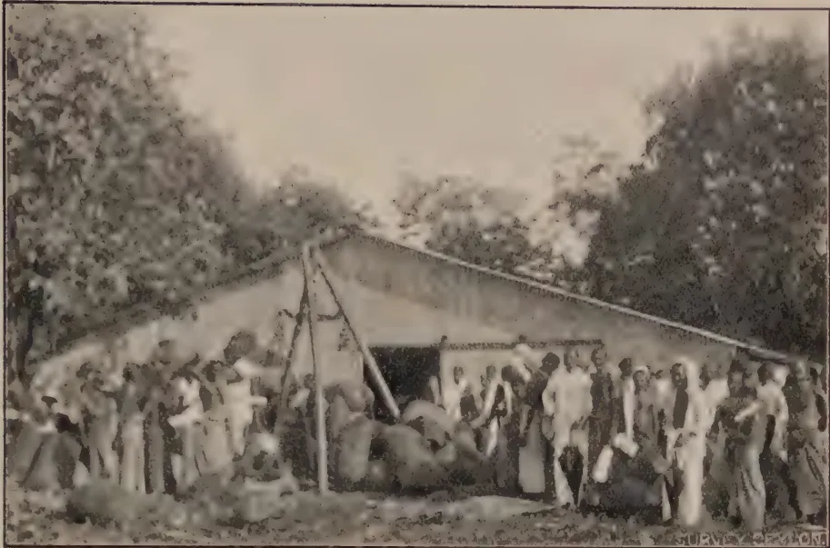
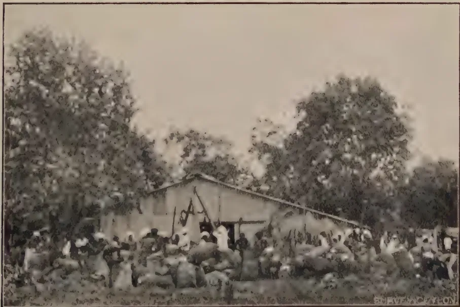
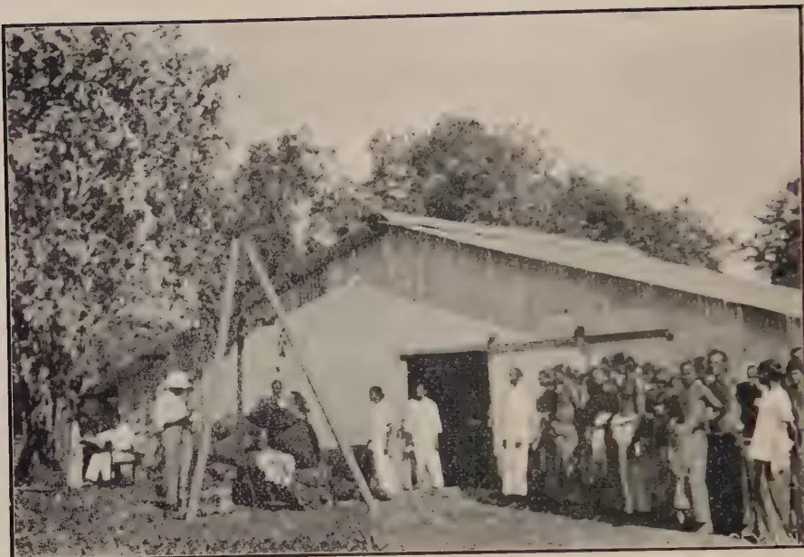
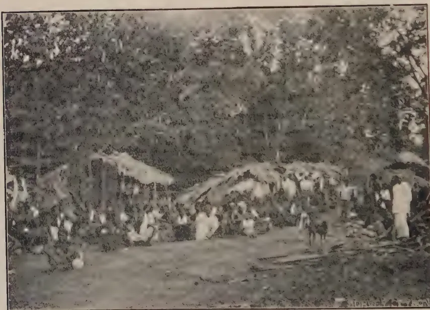

November, 1927.
THE improvement of agricultural methods in the tropics and the development of important agricultural industries have demanded in recent years increasing scientific attention. Suitable methods of cultivation have had to be evolved, pests and diseases dealt with, indigenous forms of cultivation improved and races of improved types of crops isolated and multiplied. This increasing demand for scientific research in agricultural industries in the tropics has shown the shortage of trained workers available and has demonstrated that the position must be improved if satisfactory progress is to be anticipated.
The handicaps to progress have been the subject of investigation by several committees and it has been found that not only must a greater number of trained investigators be secured but serious steps must be taken to obtain the fullest co-operation and co-ordination amongst the research workers in the various fields. It has been recognized that work carried out on one particular problem is of the utmost value to other tropical countries and adequate provision must be made, if overlapping and waste of effort is to be avoided, that the results of investigations are made readily available to all.
To this problem the recent Colonial Conference gave particular attention and in the present number of the Tropical Agriculturist is included the statement on agricultural matters which was specially prepared for the consideration of that Conference.
260The majority of the products of the tropics are agricultural and are often confined by climatic conditions to certain well defined areas. Seeing that the progress and development of tropical countries has been bound up with the development of agricultural industries, it is not to be wondered at that the Colonial Conference gave close and careful consideration to the organization of the agricultural services.
Development of great value to the tropics is bound to follow the general adoption of the proposals as outlined in the Report and the working out of details has received further consideration by the Imperial Agricultural Conference which has recently completed its sessions.
The progress of the future depends upon the progressive realization of potential resources and upon the improvement and development of existing industries.
Ceylon has made a beginning in this direction. In the past few years it has recognized the importance of research and has made a beginning with the establishment of special Research Schemes. Much still requires to be done and it is hoped that at no far-distant date a research scheme for the important and extensive coconut industry will be decided upon and its organization begun.
Scientific research can do much to assist any industry and the provision for the same is reflected in improved agricultural methods and production. Every industry that is therefore really alive realizes the important assistance that the trained technical investigator can render to it and should see that its needs are properly provided for.
The proposals of the Colonial Conference embody a far-sighted policy and are designed to prevent overlapping and to ensure the fullest possible co-operation and co-ordination. Work done in Ceylon is of value to other parts of the world and Ceylon's agricultural industries benefit from work conducted elsewhere. In recent years agricultural methods evolved in the Dutch East Indies have been studied and in part adopted with advantage and certain of Ceylon's methods are to our knowledge being followed in other countries. Advancement follows the free interchange of experiences, and in no sphere is that free interchange more necessary than in scientific research.
It has been stated that science knows no boundaries and in the interests of tropical agricultural development it is to be hoped that the proposals now outlined will be adopted without unnecessary delay.
261Original Articles.
A. W. R. JOACHIM, B.Sc., Dip. Agr. (Cantab.),
Agricultural Chemist
and
T. H. HOLLAND, M.C., M.S.E.A.C.,
Manager, Experiment Station, Peradeniya.
THE use of cover crops on tea and rubber estates as a prevention against soil erosion has been strongly advocated by this Department, and as a result many estates in Ceylon have adopted the practice of growing covers of leguminous crops. While it is admittedly true that by the growth of such covers on a soil, the latter's store of nitrogen and humus would in time be increased, the question has been asked whether in view of the large amounts of water transpired by cover crops, soils on which covers are grown would not suffer from excessive loss of moisture during periods of prolonged dry weather.
To ascertain the effects of cover crops on soil moisture under these conditions, moisture determinations were made in the Chemical Laboratory, of soil samples taken at the Experiment Station, Peradeniya, at various depths, from (a) soil under a thick cover of Indigofera endecaphylla, (b) soil under a thick cover of Centrosema pubescens, (c) bare soil weeded monthly. The samples were all taken within a few yards from one another in the New Avenue Rubber. The covers had been established just over two years on the date the determinations were made. The sampling was made on the 19th February, 1926, at the end of a prolonged drought of 21 days. The rainfall in the month of
262January, 1926, was 1.84 inches. The results are tabulated below:—
| Depths. | Moisture. | ||
|---|---|---|---|
| On Soil as received. % |
On Soil at 100°C. % |
||
| A. Under Indigofera. | 0- 3'' ... | 8.03 | 8.75 |
| 3- 6'' ... | 8.99 | 9.88 | |
| 6- 9'' ... | 8.70 | 10.07 | |
| 9-12'' ... | 10.48 | 11.31 | |
| 12-18'' ... | 10.49 | 11.70 | |
| B. Under Centrosema. | 0- 3'' ... | 8.55 | 9.35 |
| 3- 6'' ... | 12.10 | 13.20 | |
| 6- 9'' ... | 12.30 | 14.03 | |
| 9-12'' ... | 13.13 | 15.12 | |
| 12-18'' ... | 13.43 | 15.41 | |
| C. Bare Soil scraped Monthly | 0- 3'' ... | 5.98 | 6.36 |
| 3- 6'' ... | 10.40 | 11.61 | |
| 6- 9'' ... | 13.98 | 16.27 | |
| 9-12'' ... | 15.23 | 17.97 | |
| 12-18'' ... | 16.23 | 19.37 | |
An examination of these figures would show that, as was to be expected, less moisture is to be found in the first six inches of the bare soil than in the soils under cover crops, but more moisture at greater depths in the latter. The soil under Centrosema has retained considerably more moisture at all depths than the soil under Indigofera. This can be attributed to the greater amount of organic matter derived from the Centrosema. The greatest total moisture in the top 18 inches is found in the case of the bare soil. This clearly indicates that more moisture is lost during dry weather by transpiration from the plots with cover crops, than is conserved by the humus and surface mulch formed during a period of two years on these plots. The bare soil plot, on the other hand, loses moisture only by surface evaporation, the mulch on its surface preventing excessive loss of moisture through capillarity.
The view was however advanced and apparently rightly, that if the cover crop was given a chance of establishing a sufficiently thick surface layer of humus and organic matter, the losses of moisture during a period of drought from soils under cover crops would not be as great as from bare soils, despite the losses by transpiration. On the 10th September this year at the end of a drought of 29 days barring two on which light rain had fallen, soil samples from the identical cover crops were again taken, but this time to a depth of 24 inches. The covers had by then
263been established nearly years during which time they could be expected to have formed a fair surface layer of humus and organic matter. The rainfall figures previous to sampling were as follows:—
| July | ... | 6.91 inches. |
| August, 1st—11th | ... | .97 inches. |
It will be noted that though the period of the drought was longer this year, there were two days on which rain amounting to .33 inches had fallen in the interval. The rainfall for the month previous to the start of this year's drought was also greater than that previous to the drought in February, 1926. These two facts would probably account in part at least for the greater amounts of moisture found in the samples taken this year. The results of the second series of moisture determinations in the soils are as follows:—
| Depths. | Moisture. | ||
|---|---|---|---|
| On Soil as received. % |
On Soil at 100°C. % |
||
| A. Under Indigofera. | |||
| (1) | 0- 3'' | ... 9.82 | ... 10.89 |
| (2) | 3- 6'' | ... 12.86 | ... 14.71 |
| (3) | 6-12'' | ... 13.64 | ... 15.80 |
| (4) | 12-24'' | ... 15.32 | ... 18.09 |
| B. Under Centrosema. | |||
| (5) | 0- 3'' | ... 12.15 | ... 13.83 |
| (6) | 3- 6'' | ... 14.44 | ... 16.88 |
| (7) | 6-12'' | ... 16.12 | ... 19.22 |
| (8) | 12-24'' | ... 17.32 | ... 20.94 |
| C. Bare Soil. | |||
| (9) | 0- 3'' | ... 7.38 | ... 7.97 |
| (10) | 3- 6'' | ... 10.94 | ... 12.28 |
| (11) | 6-12'' | ... 13.53 | ... 15.64 |
| (12) | 12-24'' | ... 15.64 | ... 18.54 |
It will be observed that as in the previous determination, the soil under Centrosema contained considerably more moisture than soil under Indigofera at all depths. But while the soils under covers were found previously to have more moisture in the top 6 inches of soil and less moisture at lower depths than the bare soil at the corresponding depths, in the present determinations the bare soil has less moisture at all depths than soil under Centrosema and at all but the 12-24 inches layer than soil under Indigofera. In this latter layer too the difference in moisture contents between the two is hardly appreciable. Again, while previously the bare soil had the greatest moisture content in the top
26418 inches of soil, it is noted now to have the least moisture content up to a depth of 24 inches. This may be attributed to the decomposing leafy material on the surface of the covers acting as a mulch, and to the absorption and retention of moisture by the humus formed as a result of the decomposition of the leaves and stems of the covers.
These results would appear to indicate that when cover crops have been grown on soils, in the early stages of their growth up to a period of at least two years, the total moisture lost from these soils up to a depth of 18 inches is greater than from the same depth of bare soil, during a period of drought. This is due to a greater amount of moisture being lost through transpiration from the leaves of the covers, than is retained by the mulch of decomposing organic matter and humus formed by the latter. When the cover has been established for a longer period, the reverse appears to take place, i.e., less moisture is lost from soils under cover crops than from bare soil. The amount of moisture retained by soils under covers in excess of what is lost through the leaves by transpiration is greater than that retained by the bare soil which loses a large proportion of its moisture through surface evaporation and capillarity.
Peradeniya, 10th October, 1927.
265ALFRED A. JAYASINGHE,
Nagoda.
THE sugar growing industry in Ceylon has been mainly confined to Baddegama and Nagoda in the Southern Province for the past half a century. Both places produced good quality white sugar and made the industry pay, but with the demise of the pioneers the manufacture of sugar was on the descent and finally the factories closed down. At Nagoda the cultivation was entirely in the hands of small growers, and a brown sugar manufacture is still maintained.
Those engaged in this business are much indebted to Mr. A. W. Winter, the veteran planter of Baddegama, for his praiseworthy attempt to rehabilitate the industry after a long respite of nearly twenty-five years.
Climate and Soil.—A warm moist atmosphere with an equal distribution of sunshine and rain, and a land composed of deep argillaceous soil are the main factors which contribute to the successful growth of the sugarcane in the southern part of the island. Mr. Winter's cultivation at Baddegama substantiates the fact that canes thrive on hills or on any ordinary good soil reasonably rich with humus.
Seasons.—Cultivation is not undertaken at a definite period, but the most favourable conditions prevail in May and October—the mid-rainy seasons.
Varieties.—Only the ordinary yellow cane is grown.
Propagation.—Propagation is carried out by cuttings or plants which consist of the two or three upper joints of the cane. The cultivator is not at present concerned with plant selection, although such a system will no doubt considerably improve the crop.
Preparation of land and planting.—To prepare the land, parallel lines are marked out with manacles five feet apart, and the soil at equal distances between the lines is dug and thrown
266up on either side forming a small trench 18 inches wide and a foot deep. The ridge is made feet broad and 20 inches high. Drains 2 feet wide and feet deep occupy the field at intervals of 75 feet.
The first application of manure is given simultaneously with the planting. Farmyard manure or cow dung is spread in the trench at the rate of five cart-loads per acre, and the cane plants which vary in length are placed in the ground in a double row a foot apart. Particular care is taken that the direction of the heads of the plants placed in one row is reversed in the other. The plants are covered with half an inch of soil, and in favourable weather they sprout in 10-12 days. Six thousand plants are required for an acre.
Fencing.—Previous to planting, a barbed wire fence of four strands is set up.
Weeding.—Weeding engages the attention of the cultivator until the leaves overlap and shade the ground. Usually within this period, i.e., six months, three weedings take place at intervals of two months.
Pests and Diseases.—The two most troublesome pests of the cane crop are the squirrel and the jackal. Very often the plantations are damaged by floods. So far fungoid disease has not caused appreciable loss.
After cultivation.—About six months after planting, a second application of manure is given and the trench is completely filled in with soil cut from the ridge, converting the original trench into a ridge and the ridge into a trench. The main object of this operation is to provide for a clean, healthy stalk. An abundance of light and air being necessary, the dead rotting leaves that enclose the stalk are removed at intervals.
Harvesting.—In eighteen months the canes attain a height of 12-15 feet and are fully ripe for harvesting. An early or late harvest will considerably reduce the quality of sugar in the cane. The canes are cut very close to the ground and the tops are secured whenever they bear the characteristics of a plant. After cutting, they are cleared of trash and roots and tied into bundles of a size sufficient for a coolie to carry, and then transferred into bullock carts for transport to the mill. Only sufficient canes for the day's crushing are cut, as otherwise, those left over without being milled will ferment.
Manufacture.—To express the juice, the canes are crushed longitudinally in an ordinary cattle cane mill, consisting of three horizontal metal rollers, and the juice flows through a pipe into the first pan in the boiling room. The juice is then transferred
267by means of a ladle to two other open pans and undergoes a process of boiling. The first two of the three pans are made of cast-iron, and the third is of copper.
A small amount of unslaked lime is used to neutralize the acid, as well as to obtain a thorough clarification and clear juice. The scum is taken off at intervals, and the boiling continues till the juice is concentrated to a certain degree of dryness. The thick syrup is next poured into a tank to cool down and change into a solid mass of crystals. After two or three days, the mass is broken up and then transferred into a box arranged in a manner to drain off the adhering brown molasses from the sugar. The mass of sugar remains in this state for 5-7 days when it is once again broken and sun-dried to be sold as brown sugar.
A long period of unsystematic cultivation has impoverished the soil, and the yield falls below a ton of sugar per acre.
Ratoon.—The crop is ratooned once and rarely twice, although a few years back, the fertility of the soil permitted it to be successfully ratooned 3-4 times. The cost of a ratoon crop need hardly exceed half the amount spent on the original cultivation. It reaches maturity in 14 months.
Rotation of crops.—Canes are rotated with sweet potatoes, manioc, dry-grains, etc., and often two years are allowed to intervene between two crops of cane.
Bargasse.—A cattle cane mill is capable of extracting the same amount of juice as the mill driven by steam power. Consequently, the bargasse requires to be sun-dried before it can be used as fuel to feed the furnace.
Labour.—The peculiar advantage of the cultivation of sugar cane is that most of the work can be performed by women labour.
Packing.—Mat bags are used for packing, and a hundred-weight of brown sugar is packed into each bag.
Molasses.—Each hundred-weight of brown sugar bears two to three gallons of molasses which are sold at Re. 1.00 per gallon to the villagers, who make use of it for their sweetmeats, cool drinks, etc.
Jaggery.—The mill owners have no attraction for jaggery manufacture, although a few dealers have made it a profitable concern. The dealers purchase the sugar from the mill owner usually at Rs. 12.00 per cwt. and produce 105 lb. of jaggery from each hundred-weight with very little expense. The jaggery is then carefully tied into bundles in plantain trash and sold at 20 cents per pound.
Expenditure and income.—To-day labour is expensive, and the average expenditure in cultivating an acre of cane is in the neighbourhood of Rs. 100.00. An acre of canes yields 16-18
268cwt. of brown sugar which can be sold at Rs. 15.00 per cwt. Also 5,000 cane plants can be secured from an acre and they can be sold at Rs. 3.00 per 1,000 plants.
Remarks.—Perhaps to-day the total area under cultivation for the manufacture of brown sugar does not exceed 200 acres. The methods of cultivation pursued are primitive and the machinery employed in crushing is inefficient. The existing state of the sugarcane industry in Ceylon discloses the immediate demand for much material improvement and development.
An industry which is one of the most important in the world and for which Ceylon is entirely dependent on foreign countries deserves the closest attention of capitalists. There are certain parts of the Island which are particularly well adapted to the cultivation of sugarcane and such cultivation could be undertaken with the assurance of a substantial return by those who are not conversant with it.
There is always a demand for brown sugar because of its adaptability to home made sweetmeats, medicines, etc.
Batticaloa and Trincomalee offer the best markets for the sale of locally made sugar.
269THE following memorandum on "Agricultural and Veterinary Research in the Colonies, Protectorates, and Mandated Territories" by the Parliamentary Under-Secretary of State for the Colonies is taken from the Appendices to the Summary of Proceedings of the Colonial Office Conference, 1927:—
In the absence of an Agricultural Adviser at the Colonial Office I have endeavoured to compile a memorandum on the work of the Agricultural and Veterinary Departments of the principal Colonial Governments represented at this Conference.
I must mention at the outset the important Report* recently published, of a Committee which has been sitting under the Chairmanship of Lord Lovat. This Committee was appointed to consider the recruitment and training of officers and to make suggestions for improving the supply of candidates and in regard to the efficiency of agricultural research and administration, and, apart from its practical recommendations, it provides an excellent review of the general situation. It also presents a considered scheme for dealing with the problems before us, and it should be most carefully studied. (Copies are being circulated separately to members of the Conference.) I am only concerned to point out in this memorandum what seem to me to be the main issues.
I am fully conscious that any lay memorandum must leave a great deal to be desired from the scientific point of view, but my main object in drawing it up has been to provide Governors and senior administrative officers, who are, for the most part, in the same position as I am as regards technical knowledge, with such data as I have been able to collect, in order that they may have a more comprehensive view of the subject than can be obtained in any single Colony. The problems will receive more expert consideration at the forthcoming Empire-wide Agricultural Research Conference to be held in London in October next, with their own delegates.
I do not pretend that the memorandum is exhaustive, and indeed I have had to omit reference to much excellent work already in progress. I have merely attempted to give a general view.
The welfare and progress of agriculture is now-a-days the most vital concern of every Colonial Administration. The prosperity of the people, the trade, and, not least, the revenue, of each dependency is mainly dependent upon its agricultural production. Apart from mineral and timber resources, rich though they may be, agriculture may be said to be the
* Cmd. 2825.
270main industry of our Colonial Empire. On the efficiency of agriculture depends therefore not only the food supply of the population but indeed all economic and social progress.
In England itself we have been slow in realising to what degree it is in the highest interests of the State to encourage and find money for the prosecution of agricultural research and the application of the results of that research to increased production. Until recent years such efforts, as far as Great Britain was concerned, were left largely to private enterprise and private endowment. The Development Commission was created in 1909, but it was not until after the war that its activities had any considerable scope. It now makes comparatively large grants to research institutions, to individual research workers, and to the training of such workers.
In many ways the self-governing Dominions and India were ahead of us in this matter, but even there I doubt whether there has been anything comparable to the tremendous efforts that have been made by the Department of Agriculture at Washington or by Germany.
As far as Colonial powers are concerned, the outstanding example of scientific effort in the agricultural field is seen in the work of the Dutch in the Island of Java. Buitenzorg in Java is the central station of activities which, both for scale and quality, are yet unmatched in the British tropical Empire. I am, of course, writing here of our Colonial Empire as distinct from India and the self-governing Dominions. The work, at Pusa, in Bengal, for example, is of the highest order.
The task which lies before us, namely, the development of 2,000,000 square miles (approximately forty times the size of England) and the agricultural activities of 50,000,000 people, is immense. I do not think I need stress any further the paramount importance of the development of more scientific methods of agriculture, not only to the Colonies themselves, but to the Empire as a whole.
What are we doing in the way of organising these great resources?
First and foremost must always come the question of the supply of properly trained and qualified staff. Our Colonial Agricultural Departments have been very largely expanded since the war—for example, the European staff of the Agricultural Department of Nigeria numbered 20 in 1922, and 44 in 1926, while in Uganda the figures are 17 in 1923, and 34 in 1926. This expansion, in some cases long over-due, faced the Secretary of State for the Colonies with the very greatest difficulty in obtaining expert staff with the necessary qualifications. The two principal steps taken by Lord Milner and his successors have been the initiation of the Imperial College of Tropical Agriculture in Trinidad, and the introduction of a system of agricultural scholarships, to which twenty-one Colonies were invited to contribute and sixteen do actually contribute. These scholarships provide for the post-graduate training, in this country and at the Imperial College in Trinidad, of agricultural officers, both for administrative and research posts, who have obtained a degree or agricultural diploma in one of the Universities or recognised agricultural colleges.
I have on two recent occasions addressed our agricultural scholars now undergoing a year's course at Oxford. This year's entry, which will be going on to the Imperial College in Trinidad, is of exceptionally high quality. The men struck me as being above the average not only in scientific training but in general capacity and usefulness. I am fully satisfied that their year at Oxford has been most profitably spent. Both the number and the quality of new entrants are steadily rising, but even so it would appear that the supply coming forward is not yet equal to the demand.
271Happily our cadre is growing. We have at this moment serving in the following seventeen principal dependencies a European staff on the strength of the Agricultural Departments of 300, of whom 91 are research officers, the remainder being administrative. In the same seventeen dependencies we now have 100 veterinary officers, of whom 20 may be said to occupy research posts. The seventeen dependencies I refer to are:—
Of the 91 research officers, 26 are chemists, 26 entomologists, 19 mycologists, 18 botanists and plant breeders, 1 soil bacteriologist, and 1 microbiologist.
Our only adequately equipped training centre and our principal research institution in the Colonial Empire is the Imperial College of Tropical Agriculture in Trinidad, which was opened in October, 1922. Its professorial staff consists of a Principal with eight Professors and nine Lecturers.
The total capital expenditure, including payments to which the Governing Body is committed, stands at £147,750. Towards this amount upwards of £87,000 was received as a result of Lord Milner's Special Appeal, and contributions from the Imperial Government, the Empire Marketing Board, and the Lancashire Cotton Industry. The Rhodes Trustees contributed the sum of £5,000 towards this Fund, whilst £15,000 has been granted by the Imperial Government towards the erection and equipment of the Hostel, and the Empire Marketing Board contributed £21,000 for various purposes contingent on a similar grant of £21,000 being given by the Lancashire Cotton Industry, largely through the Empire Cotton Growing Corporation, who in this, as in all other matters, have been of great help not only to the Colonies but also in scientific investigation of many important problems. But by far the largest individual contributor to the funds of the College has been the planting community of Trinidad and Tobago, which provided through the Government of the Colony, by means of a special export tax imposed by their special request, £50,000 for building purposes.
Apart from capital expenditure the annual cost of maintaining the College is approximately £25,000 a year. Towards defraying this approximately half of the total amount is provided by a contribution of one-half of one per cent. of their revenues made by Trinidad and Tobago, Barbados, the Windward Islands, and the Leeward Islands. The following Colonies also contribute towards the cost of maintenance: British Guiana £1,000, and British Honduras £50, annually; Nigeria £1,200 annually for five years; Gold Coast £500 annually; the Anglo-Egyptian Sudan £500 annually for five years; Sierra Leone £250 annually; and Southern Rhodesia £100. Other annual contributions include £1,000, expiring in 1929, from the Rockefeller Foundation for a Chair of Tropical Sanitation and Hygiene, and £1,000 from the Carnegie Corporation for the Library, while in addition to making capital grants the Empire Cotton Growing Corporation and the British Cotton Growing Association subscribe £500 and £200 a year respectively.
The College provides a three-years' course for its diploma and a one-year course which is largely followed by the students passing on to the Agricultural Departments in various Colonies. As I have already said,
272the College was opened in 1922; in 1923 four students completed the one-year course, six in 1924, thirteen in 1925, and sixteen in 1926. Diplomas at the end of three-year courses were granted to five students in 1925, and three in 1926. There are now forty-two students in residence at the College.
The College has issued a monthly journal since 1st January, 1924, entitled Tropical Agriculture, a valuable production the scope of which could, I think, with advantage be extended, if funds and staff permit. In addition to teaching, research work has been commenced on such subjects as the breeding of a variety of bananas immune from Panama disease, the problem of Frog-hopper blight in sugar-cane, Withertip disease in limes, and the study of colloidal soils.
The only other research station of an Imperial or Inter-Colonial character, apart from those maintained for purely local purposes, is the Amani Institute in Tanganyika Territory. This institute, as is well known, was established by the Imperial German Government and had already made considerable contributions to the science of tropical agriculture before the war. The work of this institute is now about to be restarted and has been rendered possible by the co-operation of the six Governments of Tanganyika, Kenya, Uganda, Zanzibar, Northern Rhodesia, and Nyasaland in providing between them annual contributions amounting to £8,000 a year.
In addition to this sum the Empire Marketing Board have decided to make a maintenance grant up to one-third of the total running costs of the Institute not exceeding £6,000 in any one year. The capital expenditure necessary for the rehabilitation and re-equipment of the station, which is being advanced by the Government of Tanganyika, will eventually be charged to East African Guaranteed Loan funds.
The new Director of the Institute is Mr. W. Nowell, D.I.C., appointed to this post from the Directorship of Science and Agriculture in British Guiana. He is now in East Africa; part of the necessary staff to work under him is being appointed and on receipt of his report it is proposed to proceed with the selection of the remainder. The object of this research station will be to undertake projects of long range research to supplement more particularly the research activities of the East African dependencies, and the work there should also throw an important light on cognate problems both in West Africa and in other tropical dependencies. It will form one of a chain of Imperial research stations in the tropical and sub-tropical Empire.
It is obvious that Trinidad and Amani are two of the links in any such chain. The establishment of further links will require discussion. The establishment of a new station in North Queensland is already under discussion with the Government of the Commonwealth of Australia. It would seem clear that three further links will be required, one in West Africa, one in the Middle East, and one in the Far East. I tentatively suggest that Nigeria, Palestine, and Ceylon might be considered as the most suitable loci. These research stations need not necessarily be entirely new institutions but could be built up on the basis of existing institutions. One advantage of such a chain is that certain problems of a long range character could be tried out at the same time in different parts of the Empire and the results compared. The Empire Marketing Board is engaged at this moment in making a preliminary survey of the field.
As will be seen from the above summary of the categories of research officers, agricultural research largely depends on the co-operative efforts of botanists, chemists, entomologists, and mycologists, and an important
273part of our material machinery in connection with the two latter categories is the existence of the two Imperial Bureaux of Entomology and Mycology.
The Imperial Bureau of Entomology was founded in 1913, for the purpose of encouraging and co-ordinating entomological work throughout the Empire in relation to both human and animal diseases and to agriculture. The head office is at the Natural History Museum in South Kensington, and the Bureau is in the charge of Dr. G. A. K. Marshall, F.R.S. Contributions for the upkeep of this Bureau amount approximately to £12,500 per annum, and are obtained from different Governments of the Empire.
The Bureau publishes a quarterly journal entitled The Bulletin of Entomological Research and a monthly journal entitled The Review of Applied Entomology in two parts, (a) medical and veterinary, and (b) agricultural, summarising and reviewing all current entomological literature. Quinquennial conferences of entomologists working in different parts of the Empire are held under the auspices of the Bureau.
The Imperial Bureau of Mycology, which is conducted on similar lines to the older Bureau of Entomology, and is financed in the same way, was founded in 1920. The Bureau is situated at Kew under the charge of Dr. E. J. Butler, F.R.S., late Director of the Research Institute at Pusa in Bengal. It publishes a monthly review and also organises quinquennial conferences.
There are at present no corresponding bureaux dealing with the other two main categories into which agricultural research falls, namely, plant genetics and agricultural chemistry, and the need for such institutions was indicated by Lord Lovat's Committee. Botany is to a certain extent covered by the activities of the Royal Botanic Gardens, Kew. The Director of Kew is Botanical Adviser to the Secretary of State for the Colonies, and Kew has been responsible for the gradual preparation of scientific publications dealing with the flora of different parts of the Empire. The primary function of Kew is systematic and economic botany; and, though Kew has been able to offer advice on matters relating to plant breeding and the economic improvement of types, it is beyond its province to take an active part in researches of this character.
I might add that the Empire Marketing Board are giving assistance to Kew in order to enable some of the staff to travel, and an Economic Botanist has now been appointed on the Director's Staff, who has held an important agricultural position in India. This should prove of value.
The work of the chemist enters in at practically every form of investigation and is in many ways the most fundamental of all. Soil science, both chemical and physical, is really the basic factor in all advance. I shall have occasion to refer to this later in the memorandum. The outstanding contributions to world knowledge in this field are made by the Rothamsted Experimental Station at Harpenden, in Herts, and are well known, and the Rothamsted publications are of vital importance to every agricultural research worker throughout the Empire.
In another sphere of activity, namely, the examination of agricultural and other products with a view to their use in industry, the Imperial Institute, which is supported by contributions from the Imperial and overseas Governments, has done a great deal of valuable work for the Colonies and other dependencies. As a result of the recommendations of the Imperial Economic Conference of 1923, the organisation and functions of the Imperial Institute have undergone considerable change, and subsequent
274to its amalgamation with the Imperial Mineral Resources Bureau its investigations are carried on by a mineral resources department and a plant and animal products department. The latter is under the Chairmanship of Sir David Prain, a former Director of Kew, who is assisted by an Advisory Council. In order to facilitate its work the Council has formed a number of advisory committees to deal with special subjects. The following committees, which include scientific and technical authorities, together with representatives of the trades and industries concerned, have been constituted:—
| (1) Silk | (4) Oils and oilseeds |
| (2) Timber | (5) Essential oils and resin |
| (3) Vegetable fibres | (6) Tanning materials. |
The Department has an Intelligence Section which provides technical and commercial information relating to the production, utilisation, and marketing of Empire raw materials of plant and animal origin; and from time to time the Bulletin of the Imperial Institute reviews the production and marketing of Colonial agricultural products such as groundnuts, flax, palm oil, sugar, &c.
I have dealt with the existing organisations. I now turn to the important question of the arrangements for the collection and dissemination of information and experience gained in these fields.
Lord Lovat's Committee have pointed out that the existing arrangements for collecting and disseminating reports on agricultural work carried out in the non-self-governing Colonies are at present entirely inadequate and, further, that Colonial Governments do not in general possess an adequate system of preserving and indexing the information which they receive. They observe that the results of investigations are wasted if they are not made readily available to all concerned, and that cases have come to light of researches in one Colony being conducted over again in ignorance of the fact that the work had already been done.
They point out that the great exception to this criticism is in the field of entomological and mycological effort. That this is so is due entirely to the operation and guidance of the two Imperial Bureaux and their publications, and to the fact that workers in these subjects all over the Empire are kept in close touch with the work and activities of their colleagues through the machinery of the Bureaux.
I have had ample evidence in touring the Colonies to confirm the Committee's view of the present lack of an effective system of interchange of the knowledge acquired by the work of the different Agricultural Departments. The present system of distribution of Annual Agricultural Reports and Bulletins and other publications is inadequate and should be reviewed by all Colonial Governments.
Dependencies vary a great deal in the quality of the libraries which they maintain and in their accessibility to all members of the staff of the Agricultural Departments. Lord Lovat's Committee have indicated the need for the publication of information by a central authority. I am convinced that some steps should be taken to summarise and review reports of the work that is going on in all the different parts of the Empire, together with the ordinary printed publications received both from within the Empire and from places like the Dutch East Indies, French West-Africa, and the United States of America.
It is, of course, to the Annual Reports of the Agricultural and Veterinary Departments that one looks in the main for some indication of the work that is being conducted in the different Colonies and it would certainly help if these reports could be made as full as possible, and if they could
275be produced with the least possible delay at the conclusion of each financial year. I will give an example of our present difficulties. The most recent report available in the Colonial Office regarding agricultural activities in Tanganyika Territory which I have been able to obtain (in March, 1927) is the Annual Report for the year ending 31st December, 1924. The very full and well-arranged report of the Kenya Department for 1925 was available at the Colonial Office more than six months ago.
It is a matter for consideration whether Colonial Governments could not arrange for these annual departmental reports to be framed for the financial year and to ensure that they are printed and published within six months from the end of the financial year in question if this is not already done. Copies of these reports should be sent direct by the Directors of Agriculture concerned in their production to each and every other Director of Agriculture throughout the Colonial Empire as well as to central institutions like the College in Trinidad and the Amani Institute. It would be a help to all libraries if the form i.e., quarto, octavo, &c., of these reports could be assimilated.
In addition to the Annual Reports there are varying practices regarding the publication of activities and results. To mention only a few; excellent bulletins are published for example in Ceylon, Mauritius, Nigeria, and Bermuda. Most of these special bulletins are of a highly technical character and are compiled more for the specialist than the layman. I think it is important that the reports of work contained in them should be summarised in the ordinary Annual Reports of departments. The Department of Agriculture in Ceylon issues a useful "Year Book," the Federated Malay States publish a Malayan Agricultural Journal, but the Director of Agriculture notes that the number of subscribers is "very low." Two years ago the Department of Agriculture in Trinidad published an extremely valuable monograph entitled Gardening in the Tropics with special reference to the needs of schools. There was a wide demand for this publication not only within but outside the Colony and the edition was soon sold out. I am not yet aware whether it has been reprinted or whether use has been made of it by the Education as well as the Agricultural Departments of other tropical dependencies. I observe that in 1925 the Gold Coast Department issued pamphlet No. 5, being notes on the cultivation of European vegetables in the tropics. The total number printed was 750. Here again how far this publication is known outside the Gold Coast I have been unable to ascertain.
I think I am right in saying that in only one field of tropical and sub-tropical agriculture, namely, cotton growing, is there an annual publication collecting reports received from the experiment stations maintained or assisted by the Empire Cotton Growing Corporation throughout the Empire. Such a comprehensive review forms a most valuable comparative study of all the most recent work and data available.
I think I have said enough to show that while there is already much material of value there is a need for—I cannot avoid the word—co-ordination. Here again Lord Lovat's Committee have made important recommendations.
Next in importance to the adequate production and interchange of published information is the periodical opportunity given by Colonial Governments to officers in their Agricultural Departments to visit other territories. This can be effected in two ways. First by the holding of periodical conferences in groups of Colonies. These are of exceptional value not only in themselves but also by reason of the facilities they provide for workers in similar fields to meet and discuss common problems informally, and to see how those problems are being tackled under varying conditions.
276Such conferences have already taken place in the West Indies; there was also a South and East Africa Cotton conference at Nairobi last year; and a West-African agricultural conference at Ibadan in Nigeria in the spring of this year.
In addition to these conferences valuable knowledge may be obtained by the visits of suitable officers to other countries with similar problems. The Governments of Nigeria and the Gold Coast have in my opinion been very wise in sending members of their staffs to pay a combined visit to Java, Sumatra, and Malaya. This visit was made primarily in connection with the investigation of the development of oil-palm plantations in the Far East. But quite apart from its value for this purpose it must have given the officers concerned an opportunity of effecting a personal liaison with workers in tropical agriculture in another area and enabled them to see what was being done in that area over the whole field of agricultural endeavour. I hope it may be possible for other Colonial Governments to arrange for their officers to make similar tours.
I now venture to touch on some of the specific problems of tropical agriculture which are engaging the attention of the Dependencies at the present time. My object in doing so is to bring out the point that although widely scattered in area so many of the problems are common to several Colonies. One has only to consider for a moment the fact that individual tropical products have been so frequently transferred from one part of the tropics to another. Cacao—indigenous in South America—is being produced in Trinidad, Grenada, Jamaica, Gold Coast, Nigeria, and Ceylon. Para rubber was introduced by Sir H. Wickham from the forests of the Amazon via Kew to Malaya and Ceylon, which are now the principal world producers of such rubber. Sisal is a Mexican aloe. Groundnuts are among the principal crops of India, Tanganyika, Nigeria, and the Gambia. The oil-palm of West Africa is just now being developed in the Dutch East Indies and Malaya. The coconut palm of the South Pacific has become almost universal along the coasts of the tropics. One can multiply examples.
Tropical agriculture may be broadly divided into two main divisions: (a) the growth of permanent crops, or semi-permanent, such as tea, coffee, cacao, cinchona, the palms, rubber, sisal and fruits such as grape fruit, bananas, oranges, &c., and (b) annual or short rotation crops, such as cotton, maize, rice, simsim, cassava, yams, sorghum, millets, groundnuts, peas, beans, and fodder crops, sugar, &c.
In regard to the former—the plantation or semi-plantation crops—there are certain common problems. The same type of plant of this nature is usually subject to very much the same dangers from insect and fungoid pests the world over. The climatic, including altitude, conditions favourable to the successful production of these crops are strictly comparable. The soil conditions and the response to manuring for the purpose of making up soil deficiencies are equally comparable. I note such statements as the following taken from a Trinidad report on their cacao research: "Recording the annual pod yield of individual trees has shown that there are individual trees which are naturally heavy, medium, or poor bearers. These characteristics are not fundamentally affected by manurial treatment or alteration in conditions—but destruction of shade will make good bearers temporarily, at any rate, bad bearers."
From this one deduces that, given the necessary climatic conditions as to rainfall, &c., and in the absence of any special soil types or drainage difficulties, the selection of the plant—i.e., a high-yielding strain—is much
277more important than soil conditions. Just as we now breed cattle from high milk-yielding strains, so in cacao the thing to try to establish is a plantation of good bearers, and keep on cutting out the bad bearers. The oil-palm problem is clearly very similar. There are extreme variations between varieties of oil-palm and between individual palms of the same variety, not only in the annual yield of bunches but also with regard to the oil content of the pericarp and of the kernels. Similar problems arise with para rubber, camphor, and indeed almost every economic crop of importance. Scientific selection is therefore the problem of first importance.
Or again in the case of cacao. We know now that in the Eastern Province of the Gold Coast, where the industry has been established longest, there is a definite sign of a falling-off in yield. Apart from more obvious causes such as close planting, is this due to change in the soil or change in the plant due to senility or to weakness from accumulation of disease? If the former, of what plant food is the soil becoming exhausted; if the latter, at what stage should cutting out and replanting take place?
The Dutch investigations into the oil-palm would tend to show that the oil-palm reaches its full yield under cultivation conditions at eleven years, and continues at this full yield till 30 years, after which there is a rapid decline. Similarly I gather that experiments of manuring the oil-palm show that, from the point of view of its food, phosphorus or potash are not factors of any account, but that nitrogen is.
Research in the Federated Malay States shows the very wide variation in the yield of coconut palms on similar land, and a special coconut selection experiment station has been established at Klang. The selection of coconuts, as of other palms, is clearly of wide importance, as is shown by the considerable variation in yield observable in trees in really well-managed plantations.
The more I read about permanent crops the more it would appear that the most important factor is selection—the geneticist and plant breeder's job. I have heard of a case, however, of interest on the chemical side, and that in connection with tea. I was shown at Rothamsted the other day a detailed map of a private tea estate in Ceylon on which the yield of the same variety varied very considerably. Samples of soil from different parts of the estate were sent, and it was found that the low yields ran parallel with the phosphoric content of the soil, and the exact quantities of superphosphate necessary to level up the poorest land to the best on the estate were ascertained with complete success. This is yet another side of a many-sided problem.
Camphor is another instance of a plantation crop of growing commercial importance, that stands in urgent need of scientific investigation. Our knowledge of it at present is most limited.
There is, however, one almost universal factor in the proper cultivation of most of these permanent crops—especially tea, rubber and oil-palms—and that is soil erosion. Soil erosion in the tropics—the effect of very heavy rains and burning sun—is a universal and fundamental problem. I may instance the difficulties which have been experienced in Jamaica, or again in the Gold Coast in this regard. The best method of tackling it is the growth of a cover crop that will grow under and between the trees and will preserve the humus and tilth of the soil and at the same time act as an effective green manure. A lot of experimental work has been undertaken on this, chiefly in Ceylon, as far as the Empire is concerned, and again by the Dutch in the East Indies. Both
278for rubber and oil-palm the most successful green dressings of this type that have been established are (1) Dolichos Hosei (Vigna Oligosperma) and (2) Calopogonium macunoides. The first of these is coming into use in Ceylon also—but there the most widely introduced green manure cover crop is Glicicidia maculata, and on tea estates Indigofera endecaphylla.
There is yet another side to the problem of permanent crops. What crops are suitable for introduction into new territory being opened up or in substitution for crops which are no longer economical.
The introduction of a new crop always presents difficulties. I may quote the case of coffee. When in Sierra Leone last spring, the local Chamber of Commerce urged upon me the establishment of coffee growing in that country on a large scale. As I read the reports of the East African Dependencies there seems to be general agreement there that Arabica coffee cannot in Equatorial Africa be grown successfully below 4,500 feet altitude, and that the range of Robusta coffee is between 3,000 and 4,500. Personally I doubt whether even Liberica or Stenophylla coffee will thrive in the climatic conditions of Sierra Leone. But, apart altogether from the limited range within which coffee can be successfully grown, coffee is one of those delicate and continually threatened crops which will always require the closest supervision by scientists, whether official or planters, and it is perhaps not surprising that coffee can and has become "controversial." The Director of Agriculture in Tanganyika has recently laid down the proposition—one coffee one area. This would seem to be the only safe guide, whether from a production or marketing point of view.
I may, in passing, refer to the great losses caused by plant diseases. There are four main methods of dealing with such losses which are at present under investigation. First, natural control by parasites is being examined and there have been successful experiments in Hawaii in this method. Secondly, it is possible to secure direct control by spraying, baits, or steeping the seeds in certain solutions, or by other poison treatment. There is the physiological method of altering the method of cultivation to enable the plant to resist the attack or to grow rapidly through the susceptible stage. Fourthly, there is the possibility of breeding new varieties of plants immune from the disease.
An important field of research in connection with permanent crops is the breeding of varieties immune to special diseases. One example of this kind of problem is the production of a variety of banana resistant to Panama disease. Special work on this is in progress at the Imperial College in Trinidad and is yielding interesting results. Such research should prove of great importance not only to the West Indies but to West Africa as well. Its economic value is obvious.
I have in the few preceding paragraphs only skimmed the surface of the many problems affecting permanent crops.
Turning to annual crops it would seem that what is chiefly required is a greater effort at the fundamental study of soil science in the tropics. Cereal crops, especially maize and wheat, are absolutely dependent on adequate supplies of nitrogen, potash, phosphorus, and in some cases lime, for continuous cropping. Even the so-called virgin soils may rapidly become deficient in essential plant foods. The native agriculturist usually gets over this difficulty by what is known as shifting cultivation, but scientific agriculture knows two better methods of tackling the problem, viz., rotation of crops and manuring. Both of these sooner or later involve mixed farming i.e., the use of domestic stock in agriculture.
279Mixed farming is in its infancy in the tropics, but that it is bound to develop I make no doubt. The cultivator must keep stock if only for the manure. The Hausas in Northern Nigeria, who are good and prosperous farmers, compete with one another to get the nomad Fulani with their cattle to come on to their land in the dry season simply on account of the manure so obtained. In the long run mixed farming means fodder crops, and in the tropics too little attention has been given to the establishment of fodder crops for the double purposes of rotation with cereals and food for cattle and sheep. It follows from this that the agricultural and veterinary departments throughout the Colonies must work in the closest possible intimacy.
Our ignorance about the soils of the tropical Empire is profound. The only book on the soils of Tropical Africa is the work of an American. I think it is fair to say that this is an indication that we are behindhand in the acquisition of scientific knowledge of our resources. Sooner or later we must embark on a systematic soil survey of the tropical dependencies on a comparable basis, when comparison is possible. Only thus can we get any guides as how best to make up the deficiencies in plant food that all our new developments are fast creating. A little is being done. Sierra Leone is doing more than most dependencies, and in 1925 six hundred and thirty-nine samples from different parts of the Protectorate were collected and are being systematically analysed and classified. The Ceylon report for 1925 refers to forty-eight soil samples analysed, the Gold Coast to sixteen. The report of the Agricultural Chemist in Kenya for the same year laments that "no routine analysis of soils has been possible." The most serious deficiency from the agricultural point of view in the majority of them is the lack of lime. The importance of lime for neutralizing excessive acidity in soils and maintaining plant life has long been recognised.
In some respects the deterioration of soil seems to take place more rapidly in the tropics than in temperate climates. Nitrogen seems to be lost more easily, but I think it is clear that the study of soils in the tropics with a view to increasing the often low yields per acre of many crops is by no means a straight-forward chemical problem. Soils, especially fertile soils, are fertile not merely because they are so chemically and physically constituted that they contain the food requirements of economic plants but because they are inhabited by teeming millions of micro-organisms—bacteria, amoebae, algae, etc., and the bio-chemistry of soils is now seen to be probably the basic factor in food production.
Why do soils tend to become lateritized nearly everywhere in the tropics and not in temperate climates? I have been told that there is laterite under our feet in London formed at the time when the vegetation and climate of London was similar to that of Lagos! The answer may perhaps be in the field of micro-biology. It has been held, perhaps wrongly, that living organisms that flourish in appropriate types of soil in tropical climates make laterite, and so alter the whole physical character of the soil. I am not defending this view; I am only anxious to point out the wide field for investigation.
One very important problem in soil science of Imperial significance is the salting of soils as a result of irrigation. This has been observed in India, Iraq, Australia, and elsewhere. The old designers of irrigation systems both in Egypt and in India knew the necessity of combining drainage with irrigation in order to obviate salting, but the knowledge had to be rediscovered in America, in Australia, and elsewhere at the cost of the destruction and salting of much good land. The effects of perennial
280irrigation are manifold, and their study is in its infancy. Again, the study of dry farming demands serious attention.
Another important and similar problem is that of the mineral deficiencies of natural pastures. The great pioneer work on this subject was done by Sir Arnold Theiler and Dr. Green in South Africa. Their investigations into the effect of phosphate deficiency on the mortality and health of domestic stock is world famous. That "mineral deficiency" is not merely an African problem is now fully recognised. Sheep were found to be dying in the Falkland Islands although there was plenty of grass. Similar phenomena were noted from the Western Hebrides of Scotland. The Rowett Institute at Aberdeen has now taken up the main work on this problem. Animals, as well as human beings, require salt, and not only common salt, but sometimes almost infinitesimal traces of other elements, for resistance to disease and physical efficiency.
Thanks to the Empire Marketing Board, an Empire-wide investigation has now been organised on this particular question and work is proceeding on parallel lines in Scotland, Palestine, Kenya, South Africa, South Australia, and New Zealand. What has to be established is: What are the soil deficiencies, what is the conveying capacity of the different pasture grasses and fodder crops under different conditions, and how can the deficiencies be most cheaply and effectively made up? The answers to these questions will have a tremendous influence on the future of meat and milk production throughout the world. Dr. Orr of the Rowett Institute, Aberdeen, visited Kenya last year to initiate this research there, and out of that visit—primarily in connection with the animal industry of the Colony—has arisen the cognate study of mineral deficiencies in native foods—an important field of medical research arising out of a problem in soil science and veterinary research.
In connection with this research it became possible last year to arrange for Dr. P. J. du Toit, the new Director of the Government of the Union of South Africa's Veterinary Research Station at Onderstepoort, to pay a short visit to Nigeria. Dr. du Toit's report not only on the mineral deficiency problem but on veterinary policy generally in Nigeria is of great interest and value. I think, therefore, that the need for an Imperial bureau of soil science, to which I have already alluded, is urgent, and that its desirability will be seen even more clearly in the near future.
I have already referred to plant genetics in connection with the permanent crops. Plant genetics are almost equally important to the annual crops. In wheat, for example, we owe much to the work of Farrer of Australia, of Saunders in Canada, and the Howards in India, while at the present time the work of Sir R. Biffen and Dr. Engledow at Cambridge on that crop is an indication of the lines on which we may have to proceed in many other food crops. A lot of work of this kind has been going on in the Colonies—chiefly in connection with cotton. Sir R. Biffen, for example, has recently visited Kenya and valuable work has been initiated there. The attempt now being tried out to improve the staple and quality of selected strains of native cotton in Nigeria for growth in areas where American types do not succeed is an excellent example. If Mr. Faulkner and his staff really succeed with their "Improved Ishan" cotton, it will mean literally millions of pounds a year to Nigeria. Our chief difficulty in this field is men. There is only a very small pool of adequately trained plant geneticists in the Empire. The whole science represents practically the newest aspect of economic botany, and one of the chief arguments for the proposed bureau is to secure the enlargement of this pool.
281For the proper collection of data and the due examination of these problems, it is essential that research in each Colony should be properly organised. The success of an agricultural research station depends on the effective co-operation of chemists, entomologists, mycologists, and botanists, each contributing a share to what is very often a single problem with four different aspects. I think that wherever it is possible to arrange it the principal research station in each Colony where the specialist research staff is posted, should be under the personal direction of the Director of Agriculture. Where the Director has to live in the capital city and the central laboratories are some distance off it will probably be found convenient for the second man in the Department to live at the research station and become responsible for the direction of the necessary co-operative work.
It is further a good thing if the research laboratories, library, &c., are situated at the principal experimental station where not only are the most important field trials conducted but also the training of subordinate native personnel for future service in the departments is carried on. The research staff should assist in the work of such training, but they should not be asked to become wholly responsible for it. Their job is first and foremost research and investigation rather than teaching. The latter should be in the charge of a whole-time officer or officers in close personal touch with both research and administrative officers of the department.
I may mention in passing a scheme which has recently been set on foot in Mauritius for the establishment of a farm school where boys from the higher classes of the primary schools are to receive a theoretical and practical training in farming and elementary agriculture. They would pass on from this to become cadets in agricultural and forestry departments and possibly in private employment.
Colonies vary very much in the degree to which they have advanced in the training of native agricultural assistants. Ceylon has done more than any other dependency in this direction, primarily no doubt because the central station at Peradeniya has been longer equipped and established than similar centres in other Colonies. I understand there are thirty-five students taking a two-year course there—while a similar school has been recently established at Jaffna in the Tamil area. There are few more important aspects of the duty of all Agricultural Departments than this training of native personnel.
The Department of Agriculture in Ceylon has also done outstanding work in the development of school gardens attached to the ordinary schools throughout the country; and in forming local co-operative societies among native farmers. According to the last report there are no less than 33,630 members of producers' co-operative societies in Ceylon. This figure is of course over and above members of associations of European planters.
Another interesting example of the development of the co-operative movement is the cacao fermenting scheme organised by the Nigerian Department of Agriculture among the native cacao growers in south-western Nigeria. Not only has the working of this scheme resulted in good premiums over ordinary prices being obtained by growers but the educational value of the scheme has resulted in improving the quality of native production and of preparation for market. The success of what is called "native production," which it is generally agreed is all important from the point of view of the social and economic advance of native races, depends in the long run on the efforts of the Agricultural Departments in improving and maintaining the standards of quality in any particular line of produce. This applies to crops like groundnuts, maize, and rice, quite
282as much as to cacao, coffee, palm oil. The preparation of such crops for market and transport requires almost as much research as the growing of the crops. Such economic research is actively engaging the attention of the Agricultural Departments of the self-governing Dominions, and the Empire Marketing Board in the case of the products of European-run farms. It is a subject of no less importance to native crops. There are many peculiar and unexplained problems under this head, not the least being the wide disparity in value for market purposes between the similar products of different Colonies. The difference in the value of Sierra Leone and West Indian gingers, Ceylon and West African cacaos, are examples which occur to me.
While the development and improvement of economic crops for sale is rightly regarded as important, we cannot afford to neglect the improvement of local food crops. The costs of production of economic crops are inevitably increased if there is not an adequate supply of cheap locally-grown food, and it is the duty of Agricultural Departments to keep a watchful eye on the maintenance of food supplies for internal markets.
Turning to veterinary research, I should like to re-emphasise the growing interdependence of veterinary and agricultural work. This is daily becoming more apparent, as is the importance of veterinary to medical science. The latter can in all probability only make advances in proportion as veterinary science advances. The whole problem of virus-borne disease—whether of man, domestic animals or plants—turns very largely on the work that the veterinary officers can do for us. Virus-borne diseases like influenza, encephalitis-lethargica in man; foot-and-mouth disease and distemper in animals; mosaic disease in maize, sugar-cane and potatoes, and rosette disease in groundnuts, have this in common. They are spread by ultra-microscopical filter-passing viruses. The study of such organisms—if needed they are invariably living organisms at all—is baffling compared to the study of things which you can isolate and see under a microscope. The research required is more like the games the physicists play with the structure of the atom. The whole science of immunology in connection with these virus diseases may be said to be still in its infancy. We are still waiting for someone to achieve in this field what was achieved by Pasteur in the field of bacteriology.
But our somewhat meagre veterinary research staff in the tropical dependencies has a gigantic field quite apart from such a problem in fundamental science.
In Africa, especially, we have rinderpest and the tsetse fly, the tick-borne fevers, helminthic (worm) diseases, and a whole range of problems at which we are only at the commencement of the work. In some veterinary fields we are still in the stage at which medical science was before Sir Patrick Manson and Sir Ronald Ross, i.e., when the curative treatment of the stricken is regarded as more urgent than the development of preventive measures and the increase of physical efficiency in health. Epidemic outbreaks of rinderpest in East and West Africa have absorbed and directed the energies of veterinarians and left them little time to launch out on to the wider problems of animal husbandry and animal genetics. The discovery and application of double inoculation for rinderpest would seem to encourage us to believe that we are now masters of the situation as far as this plague is concerned; and soon we may begin the attack on trypanosomiasis on a more effective scale. We know that the larger antelope are apparently immune though infected; that some cattle and goats—also apparently immune—survive in Southern Nigeria; that tartar emetic and injections of antimony potassium tartarate compounds, so effective in the treatment of yaws in man, are effective in treating cattle infected with some
283kinds of trypanosome, but not others. We have scraps of knowledge awaiting investigation by men who will work at the research aspects of the problem which in the judgment of many is a veterinary problem of first-class importance throughout Africa from the Gambia to Zululand.
Kenya has at the moment by far the largest veterinary staff of any dependency. In fact, approximately one-quarter of our whole veterinary cadre in the Colonial Empire is in Kenya; and the East African Governors' Conference suggested that veterinary research in Tropical Africa might as far as possible be centralised at their very well equipped veterinary laboratories at Kabete near Nairobi. Over a great part of the field this is probably the best and most economical arrangement, but trypanosomiasis research will have to be done very largely in Nigeria, and possibly also in Tanganyika where there seems to be an undue variety of both flies and trypanosomes. The research will involve the study of game animals as well as domestic stock of all kinds, sheep and goats as well as cattle. In Northern Rhodesia we are confronted not only with pleuro-pneumonia and trypanosomiasis, but with a new and hitherto unknown cattle disease called "veldt poisoning." We have at present neither the staff nor the equipment for studying this new danger to Africa.
We are, I think, singularly badly off in regard to veterinary publications, though I must call attention to the valuable periodical published by the Bureau of Hygiene and Tropical Diseases, entitled the Tropical Veterinary Bulletin. I hope it may be possible to extend Dr. Leiper's work at the London School in agricultural and animal parasitology.
Veterinary research generally on sheep and goats is of great importance in tropical countries—especially to Northern Nigeria, the Gold Coast, East Africa, Palestine, and Cyprus as well. If we are to have these animals at all we may as well have good ones. Most of those we have are—with the exception of a few European-owned flocks in the Kenya highlands—poor and apt to be regarded as unmitigated nuisances. No doubt this is the reason why they have been somewhat neglected from a scientific and economic point of view.
It is not only in the Colonies that veterinary science is rather backward in the Empire. Some hard things are said about us in England in this respect. It is a fact that all too little has been done until quite recently. We now have several research institutions in this country which are engaged in breaking new ground in this important field. To name a few there is the Institute of Animal Pathology at Cambridge, under Professor J. B. Buxton, the Animal Breeding Research Department, under Dr. F. A. Crew, at Edinburgh University, the Rowett Research Institute, under Dr. Orr, at Aberdeen, the Institute of Research in Dairying at Reading, under Dr. Stenhouse Williams, and the Ministry of Agriculture's Veterinary Research Laboratory at Weybridge.
Germany, Switzerland, America, the Union of South Africa, and Australia seem now more fully alive to the special significance of veterinary science, both for its own sake and in relation to cultivation on the one hand and human medicine on the other. It is probably premature to think of forming an Imperial bureau of veterinary research—though I understand the question may be mooted at the forthcoming Imperial Agricultural Conference. In any case, all I have said about the interchange of knowledge, visits of officers from one Colony to others, in connection with agricultural staff applies equally to veterinarians. As in agriculture so in animal husbandry we have in the tropics our own peculiar field. Experience and research in the temperate zones may help and guide us, but most of the
284problems we shall have to work out for ourselves under tropical conditions. Africa provides the greatest field for further veterinary investigation, and I hope it may be possible to undertake at Kabete and elsewhere not only research into the urgent problems that face veterinary treatment and administration, but also those projects of long range research into veterinary science in its widest aspects. We want to attract into the Colonial veterinary services some of the best scientific brains that the Empire can produce. Advances in medical science can often only be made if the scientific veterinarian leads the way.
The conquest of the tropics—the most bountiful areas of all the earth's surface—can only be achieved with the assistance of science. In the tropics nature has been so bountiful in her gifts, both good and evil, that man—and especially the white man—has not yet harnessed one tithe to his use. Britain has, next to France, the largest area of tropical possessions, and if we take the Colonial Empire alone and leave out India we have a tropical population larger than that of the French Colonial Empire, and equal to that of the Dutch. In the exercise of our trust there is no more important field of endeavour than the application of modern science to agriculture. I can only conclude by reiterating what I have written at the beginning of the paper—the first need is the supply of trained and qualified staff. I am convinced that there is no investment more certain of an economic return than in securing a steadily increasing supply of really first-class workers in the fields of both agricultural and veterinary science, and it is to the direct interest of each and every Colonial Government to co-operate fully and generously to this end.
Colonial Office,
April, 1927.
W. O. G.
285THE DIRECTOR OF AGRICULTURE TO THE HON. THE COLONIAL SECRETARY.
No. F 10.
Department of Agriculture, Peradeniya,
Ceylon, August 1, 1927.
SIR,—WITH reference to your letter No. A 43/26 of June 28, 1927, asking for a report for the Finance Committee of the Legislative Council on the development of cotton cultivation in Ceylon, I have the honour to submit the following report:—
The growing of cotton in the Hambantota District was started several years back by the Mudaliyar of Magam pattu under encouragement from the Ceylon Agricultural Society. These early efforts were encouraging, and, in 1921, it was decided to open out an Experiment Station at Ambalantota. The work on this station has consisted of initial tests with various types of cotton, manurial experiments, experiments with crops in rotation with cotton, mass selection work with cotton, &c.
The early results were considered by the Board of Agriculture in 1922, and a policy of encouragement of cotton cultivation by peasant growers decided upon. This policy received the approval of Government and the progress is best shown by the following table:—
| Season. | Cwt. of Seed Cotton. |
Season, | Cwt. of Seed. Cotton. |
|---|---|---|---|
| 1922-23 .. | 15½ | 1925-26 .. | 2,700 |
| 1923-24 .. | 710 | 1926-27 .. | 1,907 |
| 1924-25 .. | 1,225 |
The production in the different pattus has been as follows—
| Season. | East Giruwa. | Magam. | West Giruwa. | |
|---|---|---|---|---|
| Cwt. | Cwt. | Cwt. | Cwt. | |
| 1922-23 .. | 9 | 5 | 1½ | |
| 1923-24 .. | 647 | 38 | 25 | |
| 1924-25 .. | 1,039 | 164 | 22 | |
| 1925-26 .. | 2,010 | 658 | 32 | |
| 1926-27 .. | 1,485 | 394 | 28 | |
The financial aspects of these purchases are shown in the following statements:—
| 1923-24. | Rs. | c. | ||
|---|---|---|---|---|
| Payments to cultivators .. | .. | .. | 11,957 | 41 |
| Cost of seed, freight, cart hire, &c. .. | .. | .. | 5,495 | 17 |
| 17,452 | 58 | |||
| Proceeds of sale of cotton .. | .. | .. | 18,202 | 81 |
| Profit .. | 750 | 23 | ||
Total crop of seed cotton : 710 cwt.
2861924-25
| Rs. | c. | |
|---|---|---|
| Payment to cultivators | 23,815 | 58 |
| Cost of seed, freight, cart hire, travelling, &c. |
6,027 | 44 |
| 29,843 | 2 | |
| Proceeds of sale of cotton and seed | 30,733 | 40 |
| Profit | 890 | 38 |
Total crop of seed cotton : 1,225 cwt.
1925-26
| Rs. | c. | |
|---|---|---|
| Payment to cultivators | 45,513 | 59 |
| Cost of seed, freight, cart hire, travelling, &c. |
11,278 | 30 |
| 56,791 | 89 | |
| Proceeds of sale of cotton | 55,225 | 42 |
| Deficit | 1,566 | 47 |
Total crop of seed cotton : 2,700 cwt.
1926-27.
| Rs. | c. | |
|---|---|---|
| 1. Transporting cotton seed, 7 tons from mills to Hambantota |
304 | 18 |
| 2. Boat hire and transporting same from Ham- bantota to Ambalantota |
92 | 83 |
| 3. Transporting same from Ambalantota to the different centres |
110 | 47 |
| 4. Bagging and stacking cotton at different centres |
338 | 12 |
| 5. Travelling of officers and Police escort and transporting money box |
1,107 | 63 |
| 6. Needles, painting brushes, enamel, twine, &c. |
48 | 49 |
| 7. Printing cash and receipt books | 58 | 0 |
| 8. Boat hire on transport of seed cotton up to July 29, 1927 |
681 | 9 |
| 9. Steamer freight on transport of seed cotton up to July 29, 1927 |
956 | 3 |
| 10. Cart transport of seed cotton up to July 29, 1927 |
214 | 93 |
| 11. Transporting scales and weights | 32 | 85 |
| 12. Transporting gunny bags to different centres |
122 | 50 |
| 13. Boat hire for gunny bags and twine | 46 | 37 |
| 4,113 | 49 |
Bills yet to meet—approximate amount—
| Rs. | c. | |
|---|---|---|
| 14. Cart transport | 2,000 | 0 |
| 15. Steamer freight | 750 | 0 |
| 16. Boat hire | 50 | 0 |
| 17. Bonus to headmen, 1,907 cwt. at 50 cents per cwt. |
953 | 50 |
| 3,753 | 50 | |
| 7,866 | 99 |
| Brought forward | ... | 7,866 99 |
| Paid on cotton purchase-- | ... | .. |
| Rs. c. | ||
| First purchase | ... 31,548 69 | |
| Second purchase | ... 43 66 | |
| 31,592 35 | ||
| 39,459 34 | ||
| Value of cotton, including Government sub- | ||
| sidy of Rs. 5.50 per cwt. ... | ... 39,000 0 | |
| Estimated loss | ... 459 34 | |
Regarding the 1926-27 season, Mr. G. Harbord, the Divisional Agricultural Officer, reports as follows:—
General Cultivation Notes.
"The crop was sown at the end of October and early in November. At first prospects were poor, owing to the tardy arrival of the north-east monsoon rains, but there was a marked improvement in January and February. Unfortunately most unusual and heavy rains occurred during March which completely upset the prospects of a record crop. The season, which has been a particularly difficult and trying one for cotton growers, was fully one month late. The fine spell experienced in April enabled the cultivators to secure what can be described as a fair crop. Early sown cotton suffered more severely than late sown, and in this respect the village cultivators (who generally sow late) were more fortunate in this exceptional year, than were the Government experiment stations. The yields from plantations in the coastal region, notably round Hatagala, were considerably lower than from those in the interior—largely due to weather conditions. In East Giruwa pattu the necessary operations of weeding and earthing up were satisfactorily carried out and there were no serious outbreaks of insect pests beyond the usual occurrences of leaf roller at Hatagala, and in Magam pattu generally, where weeding is usually neglected. The general tendency for too wide spacing was noticeable; and short crops were the direct result of this tendency which must be corrected.
Rainfall Records.
| 1926 | Bata-ata | Middeniya | Ambalantota | Average for preceding 4 years at Ambalantota. | ||||
|---|---|---|---|---|---|---|---|---|
| Inches | Days | Inches | Days | Inches | Days | Inches | Days | |
| September | — | — | — | — | 2.48 | 4 | 5.22 | 12 |
| October | 2.23 | 3 | 1.38 | 14 | 6.13 | 5 | 5.61 | 10 |
| November | 5.31 | 9 | 6.47 | 12 | 8.16 | 11 | 5.74 | 10 |
| December | 2.05 | 4 | 6.32 | 19 | 2.15 | 8 | 5.67 | 8 |
| 1927 | ||||||||
| January | 5.38 | 8 | 4.07 | 12 | 4.81 | 10 | 5.52 | 6 |
| February | 5.14 | 2 | 3.40 | 10 | 2.50 | 6 | 1.19 | 1 |
| March | 11.93 | 11 | 8.83 | 19 | 12.15 | 16 | 4.40 | 8 |
| April | 5.94 | 5 | 5.24 | 9 | 1.47 | 4 | 1.44 | 3 |
| May | 4.99 | 9 | 10.08 | 15 | 4.85 | 7 | 3.41 | 5 |
Seven tons of seed (Cambodia locally raised) were distributed; the germination was good.
Area Cultivated.Approximately 1,000 acres. There was little or no increase in the acreage cultivated, partly owing to the low market price for cotton and also owing to the unpopularity of a block system of cultivation for cotton which was attempted in East Giruwa pattu this season.
Yields.| Cwt. | qr. | lb. | |||
|---|---|---|---|---|---|
| The total yield was | ... | 1,907 | 1 | 26 | |
| Consisting of first crop | ... | 1,847 | 3 | 19 | first quality |
| 54 | 2 | 3 | second quality | ||
| Second crop | ... | 5 | 0 | 4 | second quality |
| East Giruwa Pattu. | Magam Pattu. | West Giruwa Pattu. | ||||||
|---|---|---|---|---|---|---|---|---|
| Cwt. | qr. | lb. | Cwt. | qr. | lb. | Cwt. | qr. | lb. |
| 1,485 | 2 | 0 | ... | 394 | 0 12 | ... | 27 | 3 14 |
The quality of the seed cotton, though not up to the standard of the previous season, was very fairly good, and had been carefully graded. It was probably insufficiently sunned, and the seed germination will probably be affected thereby.
Cotton Purchase.The arrangements for purchasing the crop, which differed somewhat from the method adopted in previous years, were carried out smoothly; and the Divisional Agricultural Officer was relieved of about one-third of the actual cotton buying.
This season there were four buying centres—
The Divisional Agricultural Officer purchased at the Hambantota and Middeniya centres.
The Assistant Farm Officer, Mr. N. Senaratne, purchased at Ambalantota centre.
The Agricultural Instructor, Bata-ata, Mr. M. A. Samarasinghe, purchased at Bata-ata centre.
| Buying Centres. | Cotton Purchased. | Value. | |||
|---|---|---|---|---|---|
| Cwt. | qr. | lb. | Rs. | c. | |
| Hambantota (Warehouse) | ... | 389 | 27 | ... | 6,878 07 |
| Middeniya (New Cotton Store) | ... | 864 | 2 6 | ... | 13,703 51 |
| Ambalantota (Old Cotton Store) | ... | 416 | 1 16 | ... | 7,123 62 |
| Bata-ata (New Cotton Store) | ... | 237 | 0 5 | ... | 3,887 15 |
| Total | ... | 1,907 | 1 26 | 31,592 35 | |
The purchase this season was effected early at Hambantota (second week of April and first week of May), but late at Middeniya (first week of June) owing to adverse weather conditions rendering the interior roads impassable.
All possible assistance was received from the Mudaliyars of the East Giruwa pattu and Magam pattu in the course of my cotton purchase work, and there was complete co-operation with the minor headmen (with one solitary exception) which expedited the work considerably.
At the Ambalantota and Bata-ata buying centres, where growers were able to suit their own convenience to a great extent, the arrangements gave general satisfaction. The buying officers at these two centres performed their duties well, their cash and receipt books were frequently scruti-

Middeniya Buying Centre.
Purchasing Cotton.

Middeniya Buying Centre.
Growers bagging their Cotton previous to weighing in.

Middeniya Buying Centre.
Weighing Cotton.

Temporary Boutiques at Middeniya.
Trade following the Cotton Purchase Scheme.
289nized by me, and they were kept in funds up to a limit of Rs. 2,000 at any one time.
In addition to the two assistant buying officers, Messrs. N. Senaratne and M. A. Samarasinghe, already mentioned, the following officers of the Southern Division undertook special duties in connection with this season's cotton purchase, and carried out the work entrusted to them methodically, energetically, and efficiently:—
Mr. M. Perera, clerical assistance and accounting.
Mr. M. W. Jayasuriya, weighing officer.
Mr. W. Singapully, bagging and stacking officer.
Mr. W. P. Karannagoda, transport and shipping.
The two new cotton stores, erected at Bata-ata and Middeniya at an all-in-cost of Rs. 1,500 each, proved most useful and adequate for the temporary storage of the crop at those centres."
The above report indicates the line of development which is taking place, viz., the cultivation of cotton in blocks rather than in isolated chenas of small acreage, the establishment of buying centres, and the testing of rotation crops.
The future requirements are: an earlier maturing type of cotton, as village cultivators will not sow cotton until after the kurakkan chenas have been sown, further work with rotations, the establishment of a ginnery, the establishment of another buying centre at Middeniya, the encouragement of cotton growing in West Giruwa pattu, where there has been for some time a desire for lands to be assigned for cotton cultivation, and the guarantee of the price at its present level for the next three or four years.
There is little doubt that cotton can be a useful money crop in crop rotations in the Hambantota District, and if continuous cultivation of areas of land can, as has already been done in some cases, be encouraged, I consider that such lands should be settled at extremely favourable terms upon such cultivators.
Some cotton is being regularly grown in Matale near Dambulla, in Uva mainly at and around Dambegalla and Bibile, in the Province of Sabaragamuwa below Balangoda and around Embilipitiya and in the Wewagam pattu of the Eastern Province. The crops from all these sources will amount this year to about 150 cwt., as against about 200 cwt. last year. The crops around Embilipitiya have been encouraging and some development at this centre may take place.
Cotton in Ceylon should be looked upon as a money crop in the cultivation of dry lands by peasant holders. Its cultivation is well suited to the Hambantota District of the Southern Province, and when further data are secured regarding rotation crops, it is quite possible to visualize a dry land system of cultivation which will consist of food grains and fodder crops for cattle grown in rotation with cotton, chillies, and possibly other money crops. Good crops of kurakkan and black gram have been secured from land which had been continuously grown in cotton for several years and there are distinct prospects before chillies and other crops. Such a system of cultivation means a complete change for the cultivators of the district and will require the full support and encouragement of the Revenue Department if its introduction is to be successful. Such introduction will be slow, but there are already signs of interest amongst some of the cultivators in the more populated areas of the district, and both the Divisional Agricultural Officer and myself are convinced that the concentration of efforts in the Hambantota District will eventually be fully warranted.
F. A. STOCKDALE,
Director of Agriculture.
THE following is a paper read by Dr. S. S. Pickles, D.Sc., F.I.C., and Mr. B. D. Porritt, M.Sc., F.I.C., at the International Rubber Exhibition, Paris:—
The reports of the conferences which have been held in connection with former rubber exhibitions are valuable as affording a clear picture of the technical and commercial problems which have at various times exercised the minds of those interested in the production and manufacture of rubber. The collected papers, moreover, present to some extent a reflection on an index of the developments which have taken place in the industry at the successive stages marked by the dates of the conferences.
Each period has had to face new and special problems, and although there are a certain number of questions which, like the poor, seem destined to be with us always, many of those which figured prominently in the early discussions have passed away, some perhaps having been solved, and others possibly relegated to the background as a result of changes in technical practice or requirements.
In the present paper it is proposed to give a brief outline of some of the present-day problems confronting the rubber manufacturer in the hope that this may direct attention to the fact that in spite of the remarkable increase in our scientific knowledge during the past decade, rubber still affords a field of almost limitless possibilities for pure and applied research. The subject may be considered conveniently under three headings, namely, the problems relating to (a) raw materials; (b) processes of manufacture, and (c) final products.
The standardisation of raw rubber, both in regard to price and quality, would probably be given as the most important and most urgent problem of the industry by nine rubber manufacturers out of ten.
Economics may perhaps be somewhat beyond the strict scope of the present subject, but technical practice is undoubtedly considerably influenced by variations in the cost of the basic raw material of the industry; and fluctuations in price which render commercial success occasionally more a question of successful speculation than technical efficiency, can scarcely be to the ultimate advantage of either the producer or the manufacturer of rubber.
The standardisation of quality is a subject to which much attention has been devoted ever since plantation rubber became extensively employed for manufacturing purposes. To say that this is still one of the most pressing problems is not to imply that the investigations have been success-
291ful. The influences of numerous factors such as that of the tree, conditions of soil, methods, and periods of tapping, dilution of latex, and the details of the coagulation, washing, drying and smoking processes have been thoroughly investigated, not only in regard to their effect upon the rate of cure and tensile characteristics, but also on such properties as plasticity and ageing.
The problem to-day, therefore, is not that of discovering the causes of variability, but of devising some practical scheme of applying to different estates the methods which are known to lead to uniformity of properties in the final product.
But let us suppose for the moment that the planter is in a position to overcome the problems of variability and asks the manufacturer what are the properties which he desires in his plantation rubber.
Are we yet in a position to make up our minds on the subject of uniformity of requirements?
There are, of course, certain desiderata, such as freedom from contamination with splinters, bark and grit, the absence of massing in the packed rubber and the avoidance of "freezing" about which there would be general agreement.
On the other hand, there are other important properties of raw rubber upon which there does not seem to be any general consensus of opinion.
Our present standards of quality for plantation rubber seem to award the first place to a tough "nervy," quick-curing product.
But a representative of one of the largest British manufacturers has recently suggested that a more plastic rubber of medium curing speed would be more suitable for general use.
When we consider that the removal of "nerve" in the milling process is costly in time and power, and that the use of organic accelerators has become widespread throughout the industry, there would seem to be much in favour of this suggestion, particularly in view of the popularity in America of soft types of rubber such as "Amber blanket."
Whether one definite standard of consistency and rate of vulcanisation would satisfy all the requirements of the industry is a question which calls for an answer, since upon it largely depends the successful application of the long and patient research which has been carried out in the East with the object of eliminating variability. The developments during the past three or four years in connection with the study of latex have given rise on a technical problem of a far more fundamental character than that of variability, and may foreshadow a complete change in the practice which has formed the basis of the industry since its establishment over 100 years ago.
What is the future of latex from the manufacturers' point of view?
The direct utilisation of this product in manufacturing processes presents many problems for the technologist, and to the practical difficulties which have been encountered in the manipulation of this attractive form of rubber must be attributed to the somewhat slow progress which has been made in developing its potential applications.
The possibilities of latex for the impregnation of fibrous materials, for the electro-deposition of rubber on metallic and non-metallic surfaces for use in the preparation of paints and paper, and the discovery that
292rubber can be vulcanised in the form of an aqueous suspension, have attracted attention on every hand, and there can be no question that the investigation of this field constitutes one of the most important and absorbing questions of the day.
A revival of interest in synthetic rubber has been noticeable in recent times, but with the existing lack of knowledge as to the exact nature of caoutchouc and under present economic conditions, most rubber manufacturers would hesitate to class this as a technical problem and would rather consider it as a purely academic question to be left to the attention of the scientist.
Reclaimed rubber is, however, in a different category and appears to be holding its own among the list of ingredients used in the production of rubber goods.
The reclaiming industry has its own particular problems, and, so far, has perhaps been less responsive to the recent advances of science than other sections of the rubber trade.
The fundamental problem of converting rubber waste into a material possessing all the properties of the unvulcanised product still remains unsolved; the answer perhaps may be found when we know more about the changes which take place during vulcanisation, or alternatively some modification in the method of vulcanisation itself may supply the means of producing from "reclaimed" rubber articles more closely akin to those made from new material.
Meanwhile, the product serves a useful purpose for the manufacture of cheap articles not calling for a high tensile standard, and as a substitute for other compounding ingredients in good quality mixings.
In passing, reference might be made to the somewhat surprising fact that goods made from reclaim seem to show relatively less changes on ageing than those made from new rubber, in spite of the product having been subjected to two vulcanisation treatments and a drastic intermediate plasticising process.
Although the rapid development of wireless telegraphy and telephony appears to be challenging the older systems of electrical communication, a substantial demand for gutta percha and balata for insulating purposes still continues, and any shrinkage in the amount required for cables has been more than counterbalanced by the increased application of these products in the manufacture of golf balls and belting.
The available supplies of these important analogues of rubber are strictly limited, and any extension in their use must wait until fresh sources are found or some alternative material is discovered. For this reason the possibility of effecting the conversion of the hydro-carbon or hydro-carbons of rubber into either gutta percha or a product possessing similar properties would seem to be field for investigation.
The simplification of rubber mixings is another problem which urgently calls for attention.
The page-long formulae of the days of empiricism at one time seemed likely to pass, but the progress made has been slow, and the advent of a stream of new ingredients in the guise of softeners, plasticisers, accelerators and antioxidants during recent days threatens to increase rather than diminish the complexity of rubber compounding.
293There can be no doubt that the methods used in modern factory practice are much more logical than was formerly the case and that some reason can usually be assigned for the inclusion of each of the various items making up a particular mixing.
But were the factors which determine the behaviour of different ingredients in rubber more clearly understood, it should be possible to both simplify and improve many of the complex mixings developed by more or less haphazard tests in the past and to transform rubber compounding from an art to a science.
Much work has already been carried out on the influence of factors such as particle size and shape on the performance of compounding ingredients, and in addition, the behaviour of various products such as gas black, zinc oxide and magnesium carbonate, when used alone in rubber mixings has been the subject of careful investigation.
On the other hand, little has been published which would enable one accurately to anticipate the behaviour of mixtures of these different materials in varying proportion. The effects seemingly are not calculable on the simple basis of proportional contribution of individual effects, and the elucidation of the phenomena shown by mixed fillers would be a long step towards the solution of the difficulties which stand in the way of the introduction of simple rational mixing formulae.
Parallel with the problem of the simplification of mixings is that of the reduction in the variety of the ingredients now in use. Take, for instance, the case of organic accelerators. The list of these products grows apace, and comprises many compounds which are very similar to their properties. The separation of these into a number of types, say, half a dozen in all, which would meet the ordinary needs of technical practice, would be heartily welcomed by manufacturers generally, and would tend to dissipate the confusion and bewilderment which has resulted from the indiscriminate liberation on the market of all kinds of complex chemical products occasionally disguised under proprietary names.
From the consideration of accelerators we naturally pass on to the latest class of material which research has placed in the hands of the rubber technologist. The problem of projecting rubber from the ravages of time and circumstances has been with the industry from its earliest days, and the development of the markets in tropical countries during recent years, has intensified the need for some means of enhancing the life of rubber under adverse conditions of storage and use.
The advent of the antioxidant seems to promise a solution of the difficulties which have been experienced in the past, and it is probably in this sphere that most of the research work of the immediate future will be carried out.
Several promising preservative agents have already been discovered, but so far little seems to be known as to the mechanism of their action, or the conditions under which they exert their protective functions most effectively.
It is impossible within the limits of this paper to give more than a passing reference to a few of the problems connected with manufacturing operations. The key-note in almost every case is the same, namely, economy.
294In the past the rubber industry has been one of the most wasteful-prodigious in steam consumption and culpably thoughtless in its dissipation of energy both human and mechanical.
The introduction of organic accelerators has provided a means of effecting economies in steam consumption by rendering it possible to reduce the curing periods or to employ lower temperatures for vulcanisation.
The use of these compounds incidentally has given rise to fresh difficulties, and the prevention of “scorching” or premature curing, is a problem which now has to be taken into account, and necessitates more careful control of the preliminary processes of manufacture.
It is to be feared, however, that much room for improvement still exists, particularly in the older works, in regard to high steam distribution losses resulting from widely separated boilers and vulcanisers, and from the use of obsolete power plant, badly lagged pipes and defective steam traps.
Economy in power consumption is as important as the conservation of heat, and taking the industry as a whole, there is undoubtedly ample scope for general improvement in factory equipment in the wider application of sound mechanical principles and in the elimination of unnecessary friction.
The fact that the plant employed in the manufacture of rubber is of an unusually durable character, undoubtedly has handicapped progress in engineering design in the past, while the losses due to mechanical inefficiency and steam waste are unfortunately not easily analysed in detail.
The increase of fuel costs during recent years, however, has brought the questions of plant modernisation and better factory layout to the forefront, and the engineering practice of the industry is undoubtedly now undergoing a much-needed change for the better.
Apart from the inherent mechanical efficiency of the plant itself, it is doubtful whether we have yet learned to use it to best advantage, and loss is undoubtedly occasioned by the unnecessary prolongation of certain processes. In the milling of rubber more accurate control of the treatment would often obviate unnecessary expenditure of power and reduction in output, while economies might similarly be effected in the mixing process by the use of suitable softeners and plasticising agents. These not only reduce the resistance to the passage through the rolls of mixtures heavily compounded with materials such as carbon black, but facilitate the absorption of the powders by the rubber, thus shortening and reducing the severity of the treatment.
Other problems connected with processing which may be mentioned in passing are those relating to the production of “tackiness” in dry stocks, the prevention of “bloomings” of calendered sheet and the avoidance of pronounced grain effects.
Whilst considering possible improvements and economies in factory practice it would be unpardonable to overlook one of the principal items of capital expenditure, namely the cost of moulds.
295The endless trouble and cost entailed in making new moulds or in altering existing ones to satisfy slight differences in the shape of contour of goods required by different customers will be appreciated by all who have had experience in the production of mechanical rubber goods. One simple instance illustrative of many is the case of laboratory corks.
Seldom if ever are two consecutive orders received for approximately the same size of cork in which the height, width and angle of bevel are the same.
That such a state of affairs should exist in connection with many rubber articles in common use forcibly illustrates the small extent to which the advantages of the modern practice of standardisation have obtained recognition in the rubber industry.
In a trade which under the best of conditions must always be a complicated one, there can be no commercial or economic justification for adding unnecessary duplication of patterns and sizes to its other many technical difficulties.
The constant improvement in the quality and serviceability of rubber products is of the utmost importance, not only to individual manufacturers, but to the industry as a whole, and it is essential that the reputation of rubber as rubber in competition with other products should be maintained. Whilst granting that for some purposes rubber is irreplaceable, there are many of its applications for which possible alternative materials exist, and in these circumstances its use can be ensured only by consistent and satisfactory performance.
The question of durability especially calls for attention and thorough investigation. The idea that the good properties of rubber are of a transient character is unfortunately too often justified in experience, and the study of the causes responsible for the premature decay of goods in storage and in use is therefore one of vital importance to the future of the industry, particularly in connection with the development of potential markets in tropical countries. But many of the difficulties experienced in the past have been due to the lack of satisfactory testing methods, and there can be little doubt that improvement in laboratory technique will supply the key both to the elimination of inferior and unsuitable products from the market, and to the development of materials of improved quality.
Two examples will suffice to emphasise this fact. The need for a reliable test for durability has long been felt since the analytical tests of the early days were found to afford but an adequate indication of the probable behaviour of rubber goods under actual working conditions. It is obviously a difficult matter to reproduce the whole life history of an article in a limited period under laboratory conditions, but nevertheless it is now possible in the course of a few days to obtain a reasonable indication as to the ageing properties of a particular material, and further research may enhance the usefulness of the tests.
Again, take the question of the resistance of rubber to wear—a property of the highest importance in relation to its applications in connection with tyres, foot wear and engineering practice. No test has yet been devised which satisfactorily reproduces all the varied conditions to which rubber may be subjected in use, and meanwhile the development of materials to resist abrasion must be sought by more or less empirical methods.
296In these days of progress and change in all directions, no industry can afford to stand still, and the future of the rubber trade in common with many others depends to no small degree upon the extent to which research and scientific methods are applied to the improvement and control of its raw materials, processes and products.
But research alone will not suffice, and the industry as a whole must be permeated with a spirit of enterprise in dealing with the problems which have to be faced by manufacturers individually and collectively.
The subject of industrial co-operation covers too wide a field to be more than touched on in the present paper. It is, however, one of vital importance to the rubber industry, and in surveying the changes which have taken place during the past five years, there can be little doubt that the outstanding feature has been the general recognition of the fact that many of its problems and difficulties can be solved only by common action.
The development of this new spirit, the gradual disappearance of the barriers of secrecy, and the steadily growing interchange of scientific and technical knowledge may well mark the beginning of a new era in the history of the rubber industry.—The Planters' Journal and Agriculturist, Vol. VI., Nos. 18 and 19.
297THE following Annual Report for 1926, by Mr. E. Bateson, Mycologist and Agricultural Adviser for North Borneo, is published by courtesy of the British North Borneo (Chartered) Co. :—
Most of the rubber trees planted during 1926 had been raised in the old-fashioned manner from unselected seed. A few years ago considerable interest was shown in the propagation of trees by budding, and on most estates a little experimental work was done by coolies who had been sent to Jesselton for training. But doubts were thrown on the value of the methods, and, with one exception, Managers discontinued the work. Recently it has been definitely proved that high-yielding trees can be propagated by budding, and it is therefore hoped that operations will be started again on all estates where new land is being planted. Progress will be slow in the beginning; a good yielder is not necessarily a good tree to bud from, and the first generation of budded trees must be used to select reliable parents.
Some of the trees planted during the year were raised from selected seed, a method that will give a slightly improved stock, though far inferior to that obtained by budding from material of proved value.
In most old plantations a cover of mixed vegetation, kept low by periodical "slashing," is still maintained. A few Managers have begun the cultivation of Vigna oligosperma, a plant that is very popular in the Dutch East Indies. It tolerates shade and forms a good cover under old rubber, and being leguminous it adds nitrogen to the soil. Unfortunately the cost of establishing it is high; it competes feebly with other plants, and the mixed cover that it replaces has to be completely removed before it can be grown with success.
The practice of growing leguminous covers in new clearings is spreading. Mimosa invisa has been most commonly grown, but its popularity received a set-back when some stretches of it died during a drought in the early part of the year, leaving a mass of highly inflammable material. It is thought that the cover can be kept alive if it is prevented from fruiting; this can be done by beating it when it is in flower so as to break the young branches. The danger, however, has led many planters to adopt Calopogonium mucunoides as a cover, and in some cases, where Mimosa is preferred, belts of Calopogonium are being planted to serve as fireguards.
Neither Mimosa nor Calopogonium will grow in shade, and it is necessary to replace them with some other cover when the crowns of the trees become big. The Manager of Membakut Estate, Mr. R. K. Hardwick, has obtained very promising results with an indigenous plant, Desmodium
298polycarpum, which appears to thrive either in the open or in the shade. It has been established for many years under old rubber. Experience with it in new clearings has been short, but it has started so well as to prove itself worthy of a good trial.
The mixed cover formerly grown in new clearings achieved its main object in preventing erosion, but during the first few years while it had the benefit of full sunlight, it discouraged the growth of the rubber trees. With a leguminous cover there is no such disadvantage; it seems, on the contrary, to stimulate the growth of the trees, doubtless owing to the deposition of atmospheric nitrogen in the soil.
For many years a problem has been presented by deteriorating trees on land that has lost some of its fertility. During the year an advance was made towards its solution. Similar trees had been regenerated on the Hapm group of estates in Sumatra by the use of nitrogenous fertilizers, but this result was obtained on only one type of soil, and in dealing with other types preliminary experiments were first necessary. Several tests were carried out in North Borneo, but results were disappointingly uneven. It seemed probable that this was due to the fact that the fertilizer, instead of being entirely taken up by the trees, had in part been absorbed by the cover of vegetation, which there was objection to removing on account of the damage done by erosion of clean-weeded land in the past. During 1926, therefore, an area of the flat land was clean-weeded and treated with a nitrogenous fertilizer. The effect on the foliage of the trees was striking, the colour changing in a few weeks from a sickly yellow to a healthy green; it was thus clear that a deficiency in nitrogen had been the cause of unsatisfactory growth. On the basis of this result many companies arranged to conduct experiments during 1927.
An observation of practical value made during the year, which has not hitherto been recorded in scientific literature, is that when a leguminous cover can be made to grow under backward trees it has the same stimulating effect as a dressing of a nitrogenous fertilizer. This has been noticed in several places. It is not yet possible to give figures that would bear statistical analysis, but it is estimated roughly that Mimosa invisa, after two years' growth in nearly full sunlight, produces the same improvement in the crowns of the trees as a dressing of 4 cwt. of ammonium sulphate an acre. Leguminous covers may, therefore, find a place in the regeneration of deteriorating rubber in some cases, though the effect is slow, whereas that of a fertilizer is almost immediate. The observation provides a strong argument for the establishment of leguminous covers in new clearings, with the object of remedying any unsuspected deficiency in soil nitrogen or of laying up extra stores for future use.
There is little change to record in the methods of tapping employed. Daily tapping has been abandoned by nearly all companies. Tapping on alternate days is the most popular system, and it is adhered to for different reasons in spite of the fact that the periodic system gives slightly higher yields for the same cost. It is understood that the scientific workers on Hapm have, in a piece of work not yet published, added another to their valuable series of discoveries on tapping methods by determining the optimum length of tapping and resting with the periodic system. Now that this point has been cleared up it is expected that periodic will replace alternate-day tapping on some estates.
299During the long drought in the first half of the year diseases of the stem and branches, such as claret canker, black thread and pink disease, became comparatively uncommon; but in the wet weather that occurred later they multiplied on a few estates where, perhaps, an unjustified feeling of security had arisen. In general, methods of control are now well understood, and these diseases are carefully looked after.
On nearly all estates the incidence of brown bast remains at the low level to which it dropped when daily tapping was abandoned, but in one or two cases it occurred rather more commonly than was expected. Rapidity of treatment is desirable so that the disease can be caught in its early stages before a large area of bark is involved, and the new method of treatment devised on Hapm, which consists in isolating the diseased patches of bark by a cut reaching to the wood, was recommended for trial.
A rather surprising feature was the occurrence of Fomes lignosus among trees fifteen or sixteen years old. Groups of fifty trees were occasionally attacked, the disease having evidently spread from an infected tree in the centre. The treatment of large trees is expensive, but worth while. Fomes occurred also in many young clearings, but there has, as yet, been no report of such heavy infection as sometimes occurred in young rubber planted about 1910. Ustulina zonata and Fomes pseudoferrous, though known on most estates, are still comparatively uncommon diseases.
Pests caused less trouble than they have done for many years. Estates in districts infested by wild pig are now well fenced, and some Managers reported that poison had proved a useful auxiliary method of control. White ants continued to be troublesome; the injection of poison gases into affected trees is a palliative, but the only method that is likely to be completely successful is the destruction of jungle stumps and timbèr, which they use as nesting places.—The Bulletin of the Rubber Growers' Association, Vol. IX., No. 8.
300THE following was read by W. Spoon, Chem. Eng., Staff Officer, Commercial Division of the Royal Colonial Institute, Amsterdam (Holland), at the International Rubber Exhibition, Paris.
When preserving fruit, two principal ways may be distinguished.
The fruit may be picked when still unripe and then transported—with the necessary precautions—to the place of consumption. On the way the process of ripening will begin already, to become quite ready at the place of consumption. Everybody knows this system from the banana transport; the fruit leaves the West Indies when quite green and arrives here for the greater part in still unripe condition, to be distributed after a short process of ripening.
This cannot be called an ideal method. The fruits, picked when still unripe, shall never obtain the same taste and flavour, which should have arisen if they could have ripened at the tree. This leads to the second principal way for the preservation of fruits, which makes it possible to pick the fruits in a riper—although not wholly ripe—stage.
After picking the fruits, the process of ripening is much retarded, partly stopped as it were, by a special treatment, so that there is sufficient time for transport and storage, before the fruits are consumed. When applying this method, the taste and the flavour of the fruits will be better than when using the first system.
An example of the second method we find in the preservation of fruits with the latex of Hevea brasiliensis. The intention is to supply the fruits with a thin rubber film by dipping them first into the latex and then letting it dry in a thin layer. This layer covers the fruit entirely, thus shutting it off from the air, so that the process of ripening and, at the same time the drying up, cannot proceed as under normal conditions, i.e., must be greatly retarded. By removing the thin rubber coat the process of ripening can go on again and the originally not wholly ripe fruits can become ready for use.
The practical application of the method is, however, not so simple. We shall, therefore, first give a short revue about the results obtained so far, followed by a description of a few experiments of which we were informed.
Almost at the same time (in 1923-1924) in the Dutch East Indies and in Holland, experiments were made to preserve fresh fruits in the way just described.
301(a) Experiments in the Dutch East Indies.—We refer to the experiments, made by P. J. S. Cramer and A. P. Cramer-Van Deventer in Buitenzorg (Java), the results of which have been patented by the last-named in 1924 (Dutch patent No. 23599).
For some time somewhat exaggerated reports have circulated in the Press about their experiments, which have been rectified by Cramer in the beginning of 1925. At the same time, a short summary was given of the results obtained; so far no further particulars have been published about the experiments in Buitenzorg.
It appears that several precautions are necessary to obtain good results. First the fruits to be preserved must be quite sound and must have been picked at the proper stage of maturation, i.e., not wholly ripe, but at the moment of ripening, as shown by the change in colour. If these conditions have been satisfied—which is not always easy—then it is possible to keep some kinds of fruits in good condition for a few weeks. We are speaking here on purpose of “some kinds of fruit,” as not all tropical fruits can stand for shutting off from the air by a coat of latex. Sometimes a fermentation is produced, which affects the taste, which is, for instance, the case with the mango and the avocado pear, although apparently the fruits have remained unchanged.
The results obtained by treating the mangosteens, are described more fully. It is a known fact that mangosteens, once they are picked, can be kept good for a short time only. It is the more striking that, by covering them with a coating of latex, this period can be increased many times. Even the long journey from India to Europe proves possible, as described by A. Chevalier. In October, 1923, Cramer forwarded some cases of mangosteens, each fruit covered with latex and packed separately in oiled paper, to Paris, where it was received by Chevalier on December 1, 1923. He found that about 60 per cent. of the fruits had remained good. The peel had the normal violet colour and the pulp was still perfectly fragrant. Other consignments by parcel post gave the same satisfactory results.
So far about the experiments in India. Cramer himself warns not to rush things, especially as regards the possibility of sending all kinds of tropical fruit to Europe.
The only thing which has been clearly proved is that there are some kinds of tropical fruit which—after observing the necessary precautions—can be kept a few times longer than the fruits not treated.
(b) Experiments in Holland.—Of the experiments made in Holland, those of the Propaganda Department of the International Association for Rubber and other Cultivations in the Netherlands Indies (The Hague) have been described more fully. The first communications—which can be found in the second Annual Report (1924)—agree with the experience gained in India, i.e., that the process cannot be applied to all kinds of fruit, and that the fruits must be treated in still immature condition.
Experiments were made with strawberries, plums, peaches, pears and apples, of which only the last gave satisfactory results.
In 1925 the experiments were continued on a larger scale at Wageningen. The third Annual Report already gives a short summary of the results, followed by an extensive description of the experiments by J. G. Fol, in the course of 1926.
302Before proceeding, the attention must be drawn to an important point of difference between the experiments in the Netherlands East Indies and in Holland.
In India every day there is fresh latex available, which has a high viscosity. After dipping the fruit in this latex, a comparatively large amount of the liquid shall remain on the fruit, which, in most cases, after drying up, gives a sufficiently thick coat of rubber.
In Holland, generally speaking outside the Tropics—only preserved latex is available. For the greater part this preserving is done by adding a small quantity of ammonia to the latex, directly after the harvesting. Provided that it is kept shut off from the air, so that no ammonia can evaporate, the latex remains good for a long time, and can be safely sent, for instance, to Europe for storage. Besides a preserving effect, the ammonia has, however, also another influence on the latex, i.e., the viscosity is very much reduced. For the object described here this is not a very favourable change, for now there shall remain less liquid on the fruit than is the case when using fresh latex. Consequently the coat of rubber is much thinner and also less strong.
This drawback of the latex preserved with ammonia is fully admitted by Fol. It is overcome by concentrating the latex; the increase of the rubber content (in his experiments Fol brings it from 38.3 to 53.3 per cent.) is done according to the method of I. Traube (British patent No. 226440, 1924).
The following table, composed from observations of Fol, may illustrate that the concentrated latex (cream) gives a thicker coat of rubber to the fruit than ordinary latex.
| Rubber content of latex. |
Weight fruit (pears). |
Weight rubber coat in grm. |
in p.c. of the fruit. |
|---|---|---|---|
| 38.3 p.c. | 114.2 grm. | 0.2 | 0.175 |
| 53.3 p.c. | 173.1 grm. | 0.9 | 0.52 |
| 53.3 p.c. | 133.7 grm. | 0.7 | 0.525 |
Calculated per 100 grm. of fruit, it appears that, when using latex cream, just three times as much rubber remains on the fruit. The effect of that rubber coat can, therefore, be much bigger than that of the thinner coat of the original latex.
Coming back to the experiments of Fol, we see that an extensive study was made of the treatment of grapes, pears, apples and tomatoes, with ordinary preserved latex as well as with "latex cream" made thereof. It was studied how far this rubber coat prevents dessication, and also, how the fruits stand the coating in so far as change of colour, and especially decay, are concerned. As a rule these observations have been continued during a few weeks.
It proved to be desirable to dust the fruits—after the drying up of the attached latex—lightly with talc, in order to take away the inconvenient stickiness of the film. When applying the process on a large scale a means must be found to cover the fruits treated quickly and completely with a minimal layer of talc.
303In short, the result of the treatment for the four kinds of fruit mentioned was that, although the coat of rubber strongly retards dessication, it does not always prevent decay. As expected, the film of rubber obtained with the latex cream gave the best results.
For tomatos the results were favourable in every respect, then came apples, and afterwards grapes and pears. Much depended upon the stage of maturation and the soundness of the fruits, which has already been mentioned by Cramer. With not wholly ripe and undamaged fruits it was possible to strongly retard the process of ripening, so that, for instance, the green colour of the pears and apples remained unchanged for a few weeks, to become yellow only after the rubber skin had been taken away.
Fol further emphasises the fact that, although so far the results for some fruits are quite promising, the problem is still far from solved, and it is desirable to make further experiments. As to tomatos, he thinks it possible by a latex treatment to store these fruits for a few weeks, to be put on the market later on,—at least if a means is found to cover large quantities of tomatos at the same time quickly with a rubber skin, which as yet has not been possible.
(a) Experiment in Holland.—In 1925 Mr. L. Baron van Hogendorp at Zeist tried to preserve apples by giving them a coating of latex. The following account can be given of his experiments.
On September 22, 1925, about 40 apples (Baldwin) were dipped into latex and then kept suspended by string till after about one week the rubber film had dried. The apples were then stored between paper in a room that was heated during the day, but cold during the night, viz., not a very favourable place for storage. The apples used were not specially selected; further, they were not wholly ripe, as the time of maturation of this kind of apples only starts in November.
From the 40 apples two were sent—on November 3, 1925—to Macau (South China), wrapped in paper and then put in a tin, which was not soldered. The apples arrived in Macau at New year. One had perished, the other was still sound. After removing the rubber coat the apple was left alone for about one week; the colour, however, remained green. When the apple was consumed it appeared to be unripe.
From the other apples (at Zeist) gradually one-half perished, the rest remaining green, but getting a wrinkled appearance. When the rubber coat of one of these apples was removed the apple became yellow after a week, without, however, developing its particular flavour. At the end of February, 1925 (after five months of storage) the experiment was stopped, the then remaining apples had a disagreeable taste and had somewhat perished.
The results of this experiment are rather disappointing, which may have been caused by the unfavourable place of storage, as well as by the period of storage, which was far too long (on the average four months). After having been stored for such a long time it is no wonder the apples could not develop their full flavour any more.
(b) Experiment in Surinam with Balata Latex.—In 1924 Dr. G. Stael, at Paramaribo (Surinam) tried to preserve tropical fruit by applying a thin coat of balata. The method is the same as the above described, only the latex used is different, as so far always the latex of Hevea brasiliensis has been used. As known, balata is the chief constituent of the latex of Mimusops balata, a tree which occurs in several parts of Northern South America. Balata may be compared with gutta-percha; it is not sticky after having dried into a thin layer, as is the case with the thin film of rubber obtained from Hevea latex.
304Experiments were made with pineapples, sapotillas, avocado pears, and oranges. The results obtained with the oranges were as follows:—
On October 10, 1924, from a lot of 404 oranges, 200 were covered with balata. The treated and untreated fruits were then stored till the 23rd of the same month. The examination proved that from the 204 fruits not covered only four had perished, whereas from the 200 treated with balata 106 had perished.
The experiments with the other kinds of fruit neither gave good results. Dr. Stahel made no further experiments, which can be easily understood, seeing the disappointing results. For some reason balata appears to have an unfavourable influence on fresh fruit. In this instance, however, the fruits were treated only 10 days after the picking, and not immediately, as with the other experiments, and it is possible that this may have a bad influence. However, this cannot be traced any more now.
Which conclusions may be drawn from the experiments just described, in so far as the problem of preservation of fresh fruit is concerned?
(1) The latex of Hevea brasiliensis may be used for this purpose, that of Mimusops balata, probably not;
(2) The fruits to be preserved must be quite sound and must have been picked when not wholly ripe;
(3) If latex, preserved with ammonia, is used—which shall be the case outside the Tropics—the concentrated latex (so-called latex cream) gives better results than the ordinary latex preserved with ammonia;
(4) So far satisfactory results have only been obtained with a few kinds of fruit (tropical and non-tropical); with juicy, fleshy fruit no success was obtained.
These four points do not look very promising for the process described. One should not forget, however, that here a relatively new territory for the application of Hevea latex is concerned, which only after many experiments may become sufficiently known. A few important results have been obtained in the meantime; it is therefore not impossible that a complete solution of the difficulties will be found.—The Planters Journal and Agriculturist, Vol. VI., Nos. 17 and 18.
305THE following is a translation prepared by Mr. H. L. Ludowyk, Librarian, Department of Agriculture, Ceylon, of a section of a report on Kapok recently published by the Société de Propagande Coloniale de France which contains the latest literature on the subject. It is thought that it may be of interest to the readers of the Tropical Agriculturist.
Climate.—In this regard M. Salesby says:
The conditions affecting the growth, development of the fruit and the floss are the temperature, the total rainfall and the frequency of strong winds.
A warm climate is necessary: cold is prejudicial. Only tropical countries and some semi-tropical countries are suited to it. The maximum altitude seems to be about 1,200 to 1,500 metres, elevations of 500 giving the best results. It does not need numerous showers nor does it require an even distribution of rainfall. It can withstand a long period of drought, and such a period is even necessary for the flowering and the harvesting periods for rain is then prejudicial to the development of the pods and damages the floss. Besides a long spell of wet weather during the maturing period of the pods injures the floss. At the time of the harvesting of the pods or a little time after it the new leaves appear.
Strong winds damage the long branches and typhoons snap them. In establishing plantations it is necessary to keep this fact in view and put down wind breaks.
Soils.—In Java it grows on all soils, even the very poor ones, without need for any care, requiring only little water. But on less fertile soils the yield is delayed and the quantity harvested is less abundant. Gravely and volcanic soils give the best results.
Experience in the Philippines shows that it grows in numerous kinds of soils. A volcanic soil well weathered gives the best results; likewise an alluvial soil well drained, a sandy soil or a clayey soil well drained give equally good results. The less fertile soils sometimes give good results, but the fertile soils and those of medium fertility are preferable.
In Malaya the deep and sandy-clayey slimy soils are the best.
Propagation.—This is done by means of seeds and also by cuttings. According to M. Salesby the use of seeds is the best method. The seed is viable for a long time and germinates rapidly, it gives rise to more vigorous trees, heavier producers and they are more resistant to winds and tempests.
Planting is done in the rainy season.
Seeds planted should be selected from vigorous trees that bear numerous well developed pods containing a high proportion of fibre. Then selection should be done on the basis of the characters of the fruits, for the fruits of trees in very close proximity may differ in the value and vitality of the seeds as is shown by the table given below.
306Dimensions of pods and weights of their contents (Salesby).| Lent h | Circumference | Weight of Pods in Shell. gms. | Weight | No. of Seeds | |||
|---|---|---|---|---|---|---|---|
| Placenta | Floss | Seeds | |||||
| 148 | 135 | 34.1 | 15.6 | 1.8 | 6. | 10.7 | 197 |
| 137 | 141 | 33.5 | 14.7 | 2. | 5.9 | 10.9 | 184 |
| 106 | 129 | 24.7 | 11.2 | 1.4 | 4.7 | 7.4 | 183 |
| 136 | 140 | 30.1 | 13.5 | 1.5 | 6.2 | 8.9 | 133 |
| 152 | 150 | 39.5 | 14.5 | 2. | 7. | 10.0 | 166 |
| 130 | 143 | 30.5 | 14.1 | 1.7 | 5.2 | 9.5 | 134 |
| 101 | 120 | 17.3 | 8.2 | 0.5 | 3. | 5.4 | 71 |
| 113 | 138 | 27. | 13.2 | 1.4 | 4.9 | 7.5 | 109 |
| 129 | 132 | 30. | 14.2 | 1.8 | 5. | 19.0 | 149 |
| 134 | 133 | 32.5 | 14.9 | 1.7 | 5.9 | 10. | 187 |
| 144 | 142 | 34.2 | 13.2 | 2.1 | 5.5 | 13.6 | 194 |
During the first 6 or 7 months the soil around the plant should be kept free from weeds.
Planting is done at 6 metres (18 feet) distance between the lines and the same space between individual trees in the lines. If the spacing be less the branches touch each other and are damaged by the wind. This gives a number of 280 to 240 trees to the hectare.
Inter Crops.—Inter cultivation of non-permanent crops can be done especially leguminous cover crops. If this is not done the ground around each plant ought to be kept free of all weeds.
Should the cultivation of Kapok be considered a principal or secondary culture?
M. Salesby concludes from experience in Java and more recent experience in the Philippines that it would be profitable to make of it a secondary cultivation, the trees being employed as shade trees for coffee or cacao, vanilla, pepper or Maquey (fibre). This would permit of its cultivation in rich soils without suppressing the rich cultivations proper to those soils.
In medium soils it may take the place of the principal crop with corn, legumes, Maquey or any other culture suitable to the locality.
Seeds sown in nurseries are transplanted the second year. They produce from the second or the third year after transplanting and attain normal productivity from the fourth. Later crops of beans or maize can be grown.
Propagation by cuttings.—Branches of about 2 to 6 cm. (1-2½ inches) in diameter and .5 to 2.5 metres (1.6-7.6 feet) long are cut. The cutting should not be the growth of the same growing season.
307Planting is done in nurseries at .3 to .5 metres (1.1 to 1.6 feet) apart at the beginning of the rainy season and at a fair depth so as to encourage the development of roots over a fair length and have them numerous at the end of the dry season.
This method gains 6 to 12 months over the method of seed sowing as regards the age of production.
The seed is primarily soaked in water for 24 to 36 hours sown in holes, with three grammes to each hole or singly in nurseries at distances of 10 inches apart. M. Salesby recommends shade during the first 25 days until the plant attains .4 metre (16 inches). Then about the 9th or 10th month transplanting is done at the commencement of the rainy season. Planting is done at 255 trees to the hectare. If they were closer the branches get broken against one another. Some estimate that as many as 330 trees with a planting distance of 6 m. (18 feet) by 6 m. (18 feet) may be planted.
Plantation.—The young plants ought to be transplanted with care uprooting them by making a wide and deep hole. At least 15 cm. (5 inches) of earth should be allowed to remain around the roots and, for plants arising from seeds, only .5 to 1 m. (1.6 to 3 feet) of the stem should be allowed to remain, the portion above that height being lopped off.
Various attempts at making plantations in the Philippines, Lamao, by the Government, have shown that young trees planted in uncleared forest tide over the difficulties of the dry season and accommodate themselves to the forest environment and that the planting of cuttings did not show much of an advance over the sowing of seeds. The plants resulting from sowings often attain a height of 6 metres (18 feet) and a circumference of 40 cms (16 inches) at one foot from the ground in the space of 20 months. But the most important observation has been that transplanted trees have fruited in less than two years. This brings about the possibility of establishing fast and at a smaller cost plantations from seeds. This observation will not, undoubtedly, be confirmed in all parts.
Harvest.—The first harvest takes place in the third or fourth year in the case of seedlings and a year later for cuttings. The first two or three harvests are small, the normal yield being got at the sixth or seventh year, rising every year from that time until the age of 30 or 35 years is reached.
The pods do not all appear together, but during a period of two or three months, and this fact lengthens out the harvesting period.
In the Philippines the tree produces less at 15 or 16 years and is attacked by a kind of weevil which pierces the trunk towards the base and kills the tree in about a year.
The pods should be gathered only when they are mature. The immature fruits are indehiscent and during drying the fibre adheres to the inner wall of the shell, becomes coloured, less elastic and subject to fermentation. The immature fruit is light green and smooth. At maturity it gets wrinkled, gets brown and half-opened below the stalk. The pods have to be gathered two or three times each harvest. It is necessary to pick at maturity for if one delays the pod opens and the fibre runs risk of being damaged by rain.
Yield.—In view of the number of factors on which it depends it is almost impossible to estimate the production: trees placed in identically the same conditions give very different yields.
308M. Salesby, basing his figures on the experience in the Philippines, estimates a production of 350 to 400 pods to a tree of seven years and about 600 or more for a tree of 7 to 10 years. A kilogramme (2.2 lbs.) of fibre may be got from 150, to 200 or 250 pods, which fact shows that trees under the same conditions show very great difference as regards fibre yield.
For a plantation of about 280 trees to the hectare one may have 95,000 to 110,000 pods giving about 460 to 480 kg. of floss nett, and at 7 years one may obtain pods containing 50 per cent. of their weight of floss producing thus 640 to 650 kg. (1411—1433 lbs.) of fibre per hectare.
In the Philippines a tree of 7 years gives 350 to 400 pods; from 7 to 10 years 600 or more pods yielding a kilogramme of cleaned Kapok.
The cleaned Kapok represents 55 to 65 per cent. seeds, which means a yield of 6 Kg. of seeds per tree.
In Java, 1,000,000 pods of Bombax Malabaricum weigh 107 tons and yield 32,500 Kg. of fibre (30 %) and 61 tons of seeds yielding 6 tons of oil (10 %).
Method of harvesting.—The pods are pulled down with the aid of a pole having at the top end a hook or a knife, for in view of the fragility of the branches it is impossible to climb the tree. There is no use trying to gather the harvest by shaking the tree for the unripe pods are also brought down.
The pods should be put away sheltered from the rain. Then the selection is done for eliminating the damaged or immature pods. Then the decortication of the pods takes place. This is an operation that should be carried out as soon as the harvest has been made, for if there be delay the fibre gets discoloured.
The pod is generally opened by means of pressure with the hands and at the same time the woody portions inside are separated from the floos. Then the fibre is sorted, the damaged portions being rejected, and the others being classed according to their length and colour in order to obtain a uniform commercial product.
Separation of the Seeds.—This operation can be carried out by hand or by machinery. The native industry generally resorts to hand labour, sorting the seeds out one by one.
Others churn the fibre with a bamboo. This separates the seeds easily from the fibre and they fall below by force of their own weight. This method has been perfected by employing a cylindrical bamboo basket having its bottom pierced with apertures. Inside it are put two pieces of wood in the form of a cross borne on a perpendicular wooden axle. This traverses the bottom and top of the cylinder and the whole equipment forms a piston working in the cylinder. The cylinder is filled with raw material and the piston is worked upwards and downwards. This agitates and brakes up the raw material, the seeds get detached and fall below and go out through the openings at the bottom.
Machines.—Since the extension of the Kapok industry was taken up, machines have been invented and are actually employed.
In Java the machine used is made up of a vertical cylindrical body having a rotating vertical shaft with horizontal plates fixed on to it. on the sides are other horizontal plates. A ventilator is placed at the bottom of the machine:
309The machine is fed from above. The fibre comes in contact with the plates which divide it. Then the current from the ventilator works through the masses of floss. The seeds get separated and fall by their weight to the bottom of the machine whilst the fibre directed by the air goes below through a lateral passage.
The machine is worked by a hydraulic wheel and produces about 125 to 150 Kg. cleaned fibre per day.
A machine was constructed in Germany on the same system but with the reverse action, the feeding being done from below and the floss being repelled from above.
The work of these machines is not perfect and two passages through it are generally necessary for obtaining fibre almost totally free from seeds.
More highly perfected machines have been made on the following principle. The Kapok is agitated in a horizontal trough by means of plates fixed on a horizontal shaft fixed in the centre and having at the extremity a sort of small ventilator which directs the fibre and throws it out. The seeds fall on a wire gauze which forms the base of the trough; they fall through this and are gathered in a lower trough.
This type of machine cleans 20 Kg. an hour.
At Tonkin small iron mills that are worked by hand are used. These produce two piculs or 62 Kg.
The machine "France" designed by Felician Michotte is of the same type. By a special arrangement of the plates it treats 50 to 60 Kg. per hour without breaking the fibres and cleans it perfectly separating the fibres, whatever the length of the fibre, from the waste, seeds and axils in one passage through the machine.
The horse-power required is less than 2. It was invented in 1927.
310ROBERT VEITCH, B.Sc.,
Chief Entomologist.
BIOLOGICAL control is the term generally employed to denote the part played by natural enemies introduced for the specific purpose of checking the increase of an insect pest of an economic plant. It is a term that is also applicable to such undertakings as the present campaign for the control of various species of prickly-pear by the introduction from America of certain of their insect enemies.
A survey of agricultural conditions reveals the fact that among the worst pests with which the producer has to contend are many accidentally introduced insects. In the early days of the modern world-wide migration of the white race, economic plants were transported from one country to another on quite an extensive scale, and not unnaturally some of the destructive insects associated with these economic plants were unintentionally transported with them. In many of these cases the accidentally introduced insect pests were unaccompanied by the insect and other enemies that kept them more or less under control in their original homes. Under such circumstances many introduced insects, that were only relatively unimportant pests in their native lands, became responsible for extremely serious losses in the countries to which they unfortunately gained access.
The objective in the biological control method of fighting introduced insect pests is to readjust the balance by bringing in and establishing the natural enemies that were left behind when the destructive insects migrated. If success is achieved in the introduction of these enemies then the normal balance of nature will be more or less restored, and the numbers of the destructive insects will be so greatly reduced that the pests dealt with in this manner will cease to be of outstanding importance.
The chief enemies of destructive insects are other insects which, instead of attacking plant life, habitually feed on insect life, either as internal or external parasites, or as predators that simply seize and destroy their prey. Mention may also be made of the valuable control factors represented by introduced insectivorous birds. Other small animals, such as the mongoose, have also been used as introduced natural control factors,
311but the case in their favour has not been clearly demonstrated. The utilisation of fungus and bacterial diseases of insects has also been discussed, but, speaking generally, comparatively little progress has so far been made along this line of attack.
The biological control method of fighting destructive insects has been given particular prominence in connection with sugar-cane pests, and it seems well worth while to direct attention to some of the results achieved in the application of biological control to that branch of economic entomology. Sugar-cane entomology affords excellent examples of the success of the method, where conditions are favourable, and hence the three instances of biological control quoted in the following paragraphs are all associated with sugar-cane, and, further, all were carried out in the same country—namely, the Hawaiian Islands.
The first illustration of biological control is one that should be of a particular interest to Queenslanders, because the insect fought in this case is one that has intimate associations with Australia—in fact, Queensland is its native home. Here reference is made to the sugar-cane leafhopper which was accidentally introduced from Australia to Hawaii shortly before 1900. The insect in question is regarded as a minor pest in Australia, but on its introduction to Hawaii it spread and multiplied with astonishing rapidity, and by 1902 the position had become so serious that the insect was estimated to be responsible for a loss of £500,000 annually. The Hawaiian Sugar Planters' Association accordingly organised an Entomological Branch, and the investigation of the problem was commenced.
It was evident that the insect was a recent importation, and it was equally clear that it was not subject to the attacks of many enemies, although a few relatively unimportant native Hawaiian insects have turned their attention to this newcomer from Queensland. Eventually it was demonstrated that its native home was Australia, and an investigation of the sugar-cane districts of this State revealed the presence of a number of enemies that were keeping it in check.
It was found that three extremely small wasps were breeding in the eggs of the leafhopper, and as a consequence the attacked eggs were destroyed. These wasps were introduced into Hawaii, and certain other enemies were obtained elsewhere. These importations produced a marked improvement in the situation, and a visit to Hawaii in 1914 afforded convincing proof of the fact that on the majority of the sugar-cane plantations appreciable losses had been practically eliminated.
The entomologists, however, were not fully satisfied with the position, because, on a few plantations where climatic or other conditions were abnormal, serious losses were still being experienced, and on one plantation on the Island of Hawaii the position was far from satisfactory.
This led to a renewed search for further enemies, and Queensland again supplied requirements in the shape of a very small bug that lives by extracting the leafhopper egg contents through punctures made by its sharp beak. The relationship of this bug to the sugar-cane plant was not clearly understood in the earlier investigations, but, in 1919, it was fully demonstrated that it was not a sugar-cane pest, but was actually a very valuable enemy of the leafhopper.
312It was accordingly introduced to Hawaii, and the remaining leaf-hopper infestations were brought under control. The financial result of the application of the biological control method in this particular case is that an annual loss of £500,000 has been virtually eliminated.
A second serious pest in the Hawaiian Islands was the sugar-cane beetle borer, the original home of which is believed to have been New Guinea. The annual loss in this case was regarded as being in the vicinity of £250,000.
Being an introduced pest the biological control method was again employed, and a fly parasite was eventually discovered in the Dutch East Indies. After encountering many difficulties this parasite was successfully transported to Hawaii in 1910, and during a visit paid to that group in 1914 it was observed breeding freely on the great majority of the plantations, and it has obviously succeeded in very materially improving the situation.
The third Hawaiian success to which attention might be directed is the control of the Anomala grub. The white grubs of this beetle, which were probably introduced from the Far East, first caused noticeable injury in the year 1912. On a visit being paid to Hawaii in 1914, it was observed in enormous numbers in the magnificent rich, red soil on two of the largest plantations on the Island of Oahu, the infestation extending over several miles. Fortunately, its rate of spread was slow, and the entomological staff decided to endeavour to nip in the bud infestation which, although restricted to relatively small area, was nevertheless responsible for an annual loss of £20,000. Further, it was bound to spread throughout the whole of the group if left uncontrolled, and hence it constituted a very serious menace to the whole of the plantations of Hawaii.
Again a search for parasites was commenced, and in 1916 a wasp parasite was introduced from the Philippine Islands and was eventually permanently established. On a return visit to Hawaii, in 1917, the parasite was seen breeding in very large numbers, and here again a marked measure of success was obtained, and it is now possible to say that the Anomala grub menace to the uninfested plantations no longer exists.
The particularly interesting point about this case is the fact that biological control was established before the pest had become distributed throughout the length and breadth of the Hawaiian Islands. In the case of the leafhopper and beetle borer, the whole of the plantations were more or less infested, and enormous losses had been sustained before biological control was attempted.
Such is the record of three very fine instances of entomological work in the Hawaiian Islands. Although many of the parasites experimented with were failures, success was eventually achieved in each of the three major problems attacked by the staff. The balance sheet on the whole is a very favourable one, and the expenditure involved in the investigations has been returned a hundredfold.
One cannot but admire the splendid faith displayed by both the Hawaiian Sugar Planters' Association and its entomologists in carrying out
313the work, for it must be remembered that frequently years of arduous, discouraging, and even dangerous work had to be undertaken before success was finally achieved.
It is but right to draw attention to the fact that the conditions in Hawaii are particularly favourable for this type of entomological control work. Success has, however, been achieved elsewhere in eliminating certain difficult problems, and there are doubtless many others that can be satisfactorily handled in this manner. Biological control is, however, generally applicable only to introduced insects, and it is usually, but not invariably, of little assistance in the campaign against native pests.
Mention may be made of the fact that the biological control method has also been extensively employed in the United States, Fiji, Mauritius, South Africa, New Zealand, and Australia, as well as in several other countries. In Queensland very considerable success has been achieved in controlling woolly aphid of apples by means of a small wasp parasite, while colonies of a predaceous beetle have been introduced from Java in an attempt to minimise the losses caused by the banana weevil borer. While it should be clearly understood that, as a rule, success is possible only in the case of its application to introduced insect pests, there is, nevertheless, a large and promising field for this type of work wherever immigrant entomological problems are a serious factor in determining the degree of success likely to be achieved in agricultural or pastoral pursuits.—Queensland Agricultural Journal, Vol. XXVIII., Part 2.
314For the Months of September and October, 1927.
All the tea was pruned.
Twelve half-acre plots were set aside for a trial of the following substances which were applied to the larger cuts:—“Entwas,” clay and cow-dung, washed tar, unwashed tar. Untreated plots were also left. Report will be made in due course.
In the case of the plots under Indigofera endecaphylla the prunings were laid in the lines which are to receive the pruning mixture and from which the creeper had been cleared in the previous month.
A good deal more budding was done. The season however has been very unfavourable: long dry spells have immediately followed budding operations twice and the percentage of successes obtained under such conditions has varied between 40% and 50%.
One batch which was done in dull and showery weather, on the other hand, showed at the first inspection 147 successes out
of 149 buds put on. The importance of favourable weather conditions is thus clearly emphasised.
A separate record was made of the buds taken from green wood. It was found that 15% more successes were obtained with buds taken from green wood than from brown. It cannot be taken that this would invariably be so as a good deal of the brown wood that was received was in poor condition. It is evident however that green wood should on no account be rejected and it would probably be advantageous to cut budwood somewhat earlier than is often done.
The seed crop has been a disappointing one.
Yields of the Robusta types, which generally fell in the Season 1925-26, all showed a remarkable increase in the year ending September 30th, 1927.
The yields per tree in pounds of fresh berries for the last four years are given below.
| 1923-24 | 1924-25 | 1925-26 | 1926-27 | |
|---|---|---|---|---|
| Robusta | 2.37 | 4.01 | 3.23 | 8.54 |
| Uganda | 3.43 | 5.29 | 2.06 | 8.99 |
| Quillon | 6.91 | 3.41 | 3.91 | 5.01 |
| Canephora | 3.01 | 3.88 | 3.09 | 10.29 |
| Hybrid | 8.38 | 5.62 | 9.78 | 7.61 |
The Liberian Types showed a similar rise.
| Excelsa | 5.65 | 19.82 | 14.00 | 25.80 |
| Abeekuta | 9.16 | 12.84 | 15.26 | 18.94 |
| Liberia Pasir Pogor | 6.68 | 11.34 | 11.71 | 21.21 |
For the same season however the yields of Jackson's Hybrid and Kent's Arabica have fallen off considerably.
| 1925-26 lb. Fresh Berries |
1926-27 lb. Fresh Berries |
|||
|---|---|---|---|---|
| Per Acre. | Per Tree. | Per Acre. | Per Tree. | |
| Jackson's Hybrid | 875 | 1.50 | 364 | 0.49 |
| Kent's Arabica | 659 | 1.34 | 107 | 0.21 |
These latter coffees do not appear to be suited to Peradeniya conditions.
Plot 174, acres, recently cleared for the planting of budded Rubber, was planted with alternate rows of Centrosema. Pubescens seeds and cuttings.
The terraces of the Hillside rubber were also planted with seed of Centrosema Pubescens.
Enquiries with regard to Indigofera endecaphylla for tea are becoming more numerous.
Towards the end of the long drought which terminated in the middle of September, samples of soils at different depths were taken in
Moisture determinations were made by the Agricultural Chemist who is publishing the results in the "Tropical Agriculturist."
At the end of September a visible improvement was noticed in the half plots of Paspalum dilatatum and Guinea grass "B" which had been manured with Calcium cyanamide and Ephos phosphate. No difference was observable in the manured
halves of the other plots. The yields of the manured and unmanured halves are being separately recorded.
Three consignments of imported fruit plants were received on the Station during the year. Twelve American grape fruit plants were received in February; of these only three plants survived. A consignment of Loquats and Avocado pears were received from America in May; these have done very well; only one of each has died; the remainder are growing vigorously. In September a consignment of Oranges, Pumelos and Avocado pears was received from Trinidad. These are nearly all doing well.
The grape fruit crop this year has been very poor.
Two Litchi trees out of a number of trees planted in 1910 fruited this year for the first time.
The imported Kangayam Cattle are all doing well. No calves have yet been born.
The revenue for the financial year 1926-27 was Rs. 33,775.61 which is the highest yet recorded. The Revenue and Expenditure (exclusive of salaries of monthly paid staff) is given below for the last 4 years.
316| Revenue | Expenditure | |||
|---|---|---|---|---|
| Rs. | Cts. | Rs. | Cts. | |
| 1923-24 | 19,904 | 14 | 31,400 | 81 |
| 1924-25 | 33,546 | 44 | 32,446 | 08 |
| 1925-26 | 29,731 | 13 | 33,091 | 59 |
| 1926-27 | 33,775 | 61 | 35,061 | 58 |
The cost of forking out cooch and illuk for the financial year 1927-28 was Rs. 744.99. This included the clearing of a large area of illuk from the plot now known as 174 which is to be planted with budded rubber.
Adlay has been attacked by a smut, Ustilago coicis.
Seed of Phytolacca dioica was in 1925 imported from Australia where the tree is said to be valued in dry districts for the fodder obtained from its leaves. The seedlings have grown into irregular and
straggly trees and at Peradeniya cattle have refused to eat the leaves.
The creepers of Dioscorea yams planted in plot 140 R. have been three times eaten off completely by snails except those of the Cush-Cush yam which seem to be entirely immune.
Influenza has again been very prevalent. The Manager, Assistant Manager, Clerk, Seedsman, two of the Foremen and a large number of the labour force have been incapacitated during the period under review.
T. H. HOLLAND,
Manager.
Uda Dumbara, Pata Dumbara and Hewaheta.
A competition for the cultivation of curry stuffs was held in Uda Dumbara, Pata Dumbara and Hewaheta in Kandy District, notice for which was given through the co-operative societies, and at the Sunday market places.
Fifty competed, all entries being from Gampaha in Uda Dumbara. The drought of April-September coupled with severe winds made it difficult for the competitors
to maintain their gardens satisfactorily, and cultivations suffered in consequence.
The following were adjudged winners:—
Rs. c.
| 1st.—T. Kiri Banda of Udispattu | ... 50 00 |
| 2nd.—E. M. Rambanda of Udispattu | ... 30 00 |
| 3rd.—W. M. Dingiri Banda of Beddolgoda | ... 20 00 |
A competition for green manuring of paddy in Harispattu, Yatinuwara and Tumpane areas in Kandy District under the auspices of the Central Division of the Department was completed last month.
18 cultivators were given free issues of sunn hemp seed from stock raised at the Katugastota paddy seed station, and plots varying from to 1 acre were laid out in different centres. When the plants had attained a height of 4 to 7 feet they were cut and the green material was ploughed
in at the first ploughing of the fields for the Maha season. At the several inspections made by the Agricultural Instructor of the range the growth of the hemp plants in five of the plots was found to be extraordinarily good.
The following were adjudged the winners of the prizes offered by the Department.
| 1st Mr. C. Dunuwille of Katugastota |
| 2nd S. Kiriukkawa of Mavilmada |
| 3rd P. Kirihamy of Kondeniya. |
A vegetable garden competition was organised in the Chief Headman's division of Valikamam West in the Jaffna Peninsula for prizes aggregating Rs. 200 offered by Mr. Sagarajasingham, J.P. for competition among cultivators. The competition was confined to cultivations of brinjals and chillies and 30 competitors entered for chillies and 15 for brinjals.
Not less than acre was cultivated by each competitor. At the end of the season the Agricultural Instructor carried out the preliminary judging and selected 6 plots of each cultivation for the final judging, which was carried out in conjunction with the Divisional Agricultural Officer, Northern, Jaffna.
The following were adjudged winners:
| 1st Arumugam Nagaraja of Chuthumalay |
| 2nd S. Thillyampalam of Sandilipay |
| 3rd Ramu Karthigasu of Mathakal |
| 1st G. Saravanamuttu of Chuthumalay |
| 2nd M. Ramanathi of Punnalai |
| 3rd S. Sammugam of Punnalai. |
The winner of the 1st prize in the chillie growing competition is a student in the vernacular class at the Jaffna Farm School, and the winner of the 2nd prize is one of the students of the English class who recently passed out.
318MINUTES of the Nuwara Eliya District Agricultural Committee Meeting held at the Nuwara Eliya Kachcheri on 10th October, 1927, at 10 a.m.
Present.—Mr. C. C. Woolley, Assistant Government Agent, Chairman, Mr. F. Burnett, Divisional Agricultural Officer, Messrs. A. C. Wilson, A. J. Hamilton Harding, P. B. Andrawewa, Ratemahatmaya, Uda Hewaheta, L. B. Hindagala, President, V. T., Uda Hewaheta and Walapane, D. C. Jayawardene and Mr. C. B. Herat, Hony. Secretary.
Read letters and telegrams from the Divisional Engineer, Plant Pest Inspector, and the Ratemahatmaya, Walapane, regretting inability to attend.
Minutes.—Read and confirmed the minutes of the last meeting. Arising out of paragraph 10 of these minutes the Chairman informed the meeting that as Mr. Hindagala was leaving the district, he would be unable to take up a lease of land for papain cultivation. The Ratemahatmaya, Uda Hewaheta, however, had agreed to carry out experiments on his own land and report results to the Committee.
Tea Nursery in Walapane.—(a) Tabled letter No. D580 of 29.6.27 from the Director of Agriculture on the subject.
(b) The Divisional Agricultural Officer informed the meeting that half an acre of tea had already been planted.
(c) Agreed to Mr. Burnett's suggestion to plant a further maund of tea seed this year. Mr. Burnett promised to ascertain and report what demand there is for plants in Walapane, with a view to deciding whether a further area should be planted up.
(d) The Committee considered that plants should be sold at the rate of Rs. 20 00 per 1,000 plants to bona-fide villagers.
Paddy Station at Padiyapelella.—Tabled letter No. D168 of 4.7.27 from the Director of Agriculture stating that no funds were available to open a paddy station in
Padiyapelella in 1927 but that the matter would be brought up for consideration with 1928-29 Estimates.
Results of Competitions.—(a) The Committee approved of the following awards made by the judges for the 1926-27 competitions:—
1st prize, M. N. Allis Appu,
Kalapitiya. ... Rs. 25 00
2nd prize, M. Porolis Perera,
Hedunuwawa ... , 10 00
Certificate of Merit to M. A. M. Perera,
Metagama, Teacher
No. of entries 4.
1st prize, K. B. Seneviratna,
Teripeha ... Rs. 50 00
2nd prize, W. M. Kiri Banda,
Udamadura. ... Rs. 25 00
3rd prize, Ukku Banda,
Ambaliyadde .. Rs. 10 00
No. of entries 32
1st prize, Tikiri Naide,
Hedunuwawa ... Rs. 20 00
2nd prize, S. P. Appu Naide,
Pusulpitiya ... , 10 00
No. of entries 11
1st prize, M. Ranhamy,
Kottunugoda ... , 25 00
2nd prize S. P. Appu Naide,
Pusulpitiya ... , 15 00
1st prize, W. Thomis Appu,
Ekiriya ... Rs. 25 00
2nd prize, K. Dingiri Banda,
Hapuwala ... , 15 00
3rd , Kiri Etana,
Bowala ... , 10 00
Certificates to S. D. Lekamge and
W. Appuhamy.
(b) The Divisional Agricultural Officer informed that judging for Walapane gardens had not yet completed.
Competitions and Shows in 1927-28.—
(a) The Divisional Agricultural Officer informed the meeting that Rs. 300/- were available for competitions and Rs. 100/- for Shows for 1927-28, also donations amounting to Rs. 75:00.
(b) Resolved that the Rs. 100:00 allocated for Shows be spent for competitions.
(c) Resolved to hold the following competitions during 1927-28:—
(i) Plantain Cultivation Competition.
In all the three divisions, i.e. Uda Hewaheta, Walapane and Kotmale. The prizes for each division to be as follows:—
| 1st prize | ... | Rs. 25 00 |
| 2nd " | ... | " 15 00 |
| 3rd " | ... | " 10 00 |
(ii) Vegetable Garden Competition.
The competition to be confined to vegetable grown on paddy fields in Uda Hewaheta, Walapane and Kotmale. Prizes to be Rs. 25:00 for the 1st, Rs. 15:00 for the 2nd and Rs. 10:00 for the third in each division respectively.
(iii) Chilli Cultivation Competition.
The Competition to be confined to Uda Hewaheta and Walapane Divisions only. Prizes to be awarded as follows for each
| 1st prize | ... | Rs. 50 00 |
| 2nd " | ... | " 25 00 |
| 3rd " | ... | " 10 00 |
Advertising Competitions.—Resolved (a) that competitions for 1927-28 should be advertised by beat of tom-tom in all villages and also at Markets on Market days.
(b) The posters should be printed and placed in a conspicuous position in Markets, Gansabbawas and Ambalams.
(c) That leaflets giving particulars of the competition should be printed and distributed by minor headmen as was done last year.
Leases to Villagers.—Mr. Hamilton Harding proposed that conditions should be inserted in lease permits to villagers to ensure proper drainage and prevention of soil erosion and for green manuring.
The Chairman undertook to give effect to the proposal in issuing permits where practicable.
Kapok.—Read letter No. A102/27 of 10.9.27 from the Hon'ble. the Colonial Secretary re Kapok.
Census of Production.—Tabled statement from the Director of Statistics re census of production in the district.
Economic development of Walapane.—Resolved that this Committee is of opinion that the economic development of Walapane District greatly hampered owing to the lack of proper road communications.
Proceedings of the 9th meeting of the District Agricultural Committee held at the Kachcheri on 28th September, 1927, at 11 a.m.
Present.—Mr. M. K. T. Sandys, C.C.S. in the Chair and the following members:—Messrs. G. Harbord, Divisional Agricultural Officer, E. J. Buultjens, D. Samarawira, G. H. Altendorff, J. E. Wijesinghe and Mudaliyars W. A. Amarasekera, Honorary Secretary, S. W. Illangakoon, P. W. F. de Livera, H. E. Wickremaratne, W. A. Perera, and W. A. Wijesinha.
Absentee members.—Read telegram from Mr. R. C. Kannangara regretting his inability to be present at the meeting.
Minutes.—The minutes of the meeting held on 18th December, 1926, were confirmed.
Transplanting and Vegetable Garden Competitions.—(a) The results of the competitions were tabled.
(b) Resolved that the omission of the name of the Police Officer of Wehelgoda in the list of prize winners be supplied and that the reward of Rs. 10/- be paid to him.
(c) Resolved that paddy sheaf competitions be organised in 1928 instead of transplanting competitions and that a sum of Rs. 300/- be apportioned for the six Chief Headmen's Divisions to be divided in 3 prizes of Rs. 25/-, Rs. 15/- and Rs. 10/- for each division.
320Green Manuring Competitions.—Resolved that competitions in green manuring paddy fields be held in the six divisions and that a sum of Rs. 90 be allotted for prizes of Rs. 15/- for each division.
Vegetable Garden Competition.—Resolved that vegetable garden competitions be held in 1928 and that a sum of Rs. 300/- be allotted to be divided in three prizes of Rs. 25/-, Rs. 15/- and Rs. 10/-.
Publications.—Resolved that a sum of Rs. 10/- be voted for publication of notices, etc.
Seed Paddy Station at Borala.—The Divisional Agricultural Officer, Mr. Harbord, gave a brief account of the promising results achieved at the Borala experimental plot of about acres in extent with re-
gard to the cultivation of Heen Karayal and Sulai. He also mentioned the desirability of opening a seed paddy experimental plot at Matara.
Resolved that an Experimental Station be established at Matara, the site to be selected by the Divisional Agricultural Officer.
Judges.—Resolved that the same judges as in the present year be appointed for the ensuing year. It was also resolved that in the event of the inability of Mr. Schokman to serve as a judge, Mr. G. H. Altendorff be appointed for Wellaboda Pattu.
Resolved that 10 days' notice be given to the Divisional Agricultural Officer to arrange with the judges inspecting the plots.
321Reviews.By Dr. A. Steinmann (Buitenzorg: Archipel Drukkerij, 1927)
DISEASES and Pests of Hevea brasiliensis in the Netherlands Indies by Dr. A. Steinmann, Buitenzorg: Archipel Drukkerij, 1927), is an English edition of a Dutch work which was published in 1925 under the auspices of the Rubber Experiment Station, West Java. The volume is of good appearance, the print is clear, and a word of praise must be given to the quality of the numerous plates and photographs with which the book is supplied. The illustrations, indeed, overshadow the text of the present edition. As is explained by Dr. de Vries in a preface, the latter is a summary of the original Dutch text. It is necessarily short, but its brevity detracts from its value.
The diseases of Hevea are classified according to the part of the tree affected and appropriate treatment is recommended in each case. It is of interest to note that in the treatment of brown bast waxing is recommended in conjunction with isolating, scraping and stripping, a practice which
has not been adopted in Ceylon. It may be doubted if the symptoms of the disease called non-parasitic dieback are, as Dr. Steinmann states, closely related to the condition of the soil in all cases. It is possible that an examination of the smaller roots of affected trees might disclose the presence of another factor. Similarly, the amputation of diseased branches in cases of Diplodia dieback is by no means as successful a measure of cure as is supposed. It is apparent that in Ceylon at least the fungi present on dieback rubber stems are not the only factors concerned in the production of the dieback that may be attributed to Diplodia because Diplodia is present. Dr. Steinmann himself has reported elsewhere that inoculations of rubber stems with Diplodia and Gloeosporium alborubrum gave negative results.
The book also lists the insect and other pests of rubber in the Dutch East Indies, and it closes with a useful appendix on disinfectants, their strengths and modes of application.
| Province, &c. | Disease | No of Cases up to date since Jan. 1st, 1927 | Fresh Cases | Recovered | Deaths | Bal- ance Ill |
No. Shot |
|---|---|---|---|---|---|---|---|
| Western | Rinderpest | 968* | 44 | 933 | 9 | 25 | 1 |
| Foot-and-mouth disease | 5 | ... | ... | 5 | ... | ... | |
| Anthrax | ... | ... | ... | ... | ... | ... | |
| Piroplasmosis | ... | ... | ... | ... | ... | ... | |
| Colombo Municipality | Rabies (Dogs) | 1 | ... | ... | ... | ... | ... |
| Rinderpest | 197 | 18 | 174 | 5 | 16 | 2 | |
| Foot-and-mouth disease | 37 | 3 | ... | ... | ... | ... | |
| Anthrax | ... | ... | ... | ... | ... | ... | |
| Cattle Quarantine Station | Rinderpest | 29 | ... | 29 | ... | ... | ... |
| Foot-and-mouth disease | 12 | ... | ... | 12 | ... | ... | |
| Anthrax | ... | ... | ... | ... | ... | ... | |
| Piroplasmosis | ... | ... | ... | ... | ... | ... | |
| Central | Rinderpest | 619 | 31 | 580 | ... | 39 | ... |
| Foot-and-mouth disease | 8 | ... | 8 | ... | ... | ... | |
| Anthrax | 17 | ... | ... | ... | ... | ... | |
| Rabies (Dogs) | ... | ... | ... | ... | ... | ... | |
| Southern | Rinderpest | 32 | ... | 8 | 23 | ... | 1 |
| Black Quarter | 2 | 5 | ... | 2 | ... | ... | |
| Surra | 5 | ... | ... | ... | ... | ... | |
| Haemorrhagic Septicaemia | 3 | ... | ... | 2 | 1 | ... | |
| Northern | Rinderpest | 8 | ... | 8 | ... | ... | ... |
| Foot-and-mouth disease | 1 | ... | 1 | ... | ... | ... | |
| Piroplasmosis | ... | ... | ... | ... | ... | ... | |
| Rabies (Dogs) | ... | ... | ... | ... | ... | ... | |
| Eastern | Rinderpest | 241 | ... | 226 | 15 | ... | ... |
| Foot-and-mouth disease | ... | ... | ... | ... | ... | ... | |
| Anthrax | ... | ... | ... | ... | ... | ... | |
| Piroplasmosis | ... | ... | ... | ... | ... | ... | |
| North-Western | Rinderpest | 646 | 25 | 640 | 6 | ... | ... |
| Foot-and-mouth disease | 2 | ... | ... | ... | ... | ... | |
| Anthrax | ... | ... | ... | ... | ... | ... | |
| Piroplasmosis | ... | ... | ... | ... | ... | ... | |
| North-Central | Rinderpest | 332 | 96 | 261 | 14 | 57 | 2 |
| Foot-and-mouth disease | 6 | ... | ... | ... | ... | ... | |
| Anthrax | ... | ... | ... | ... | ... | ... | |
| Haemorrhagic S.pticaemia | ... | ... | ... | ... | ... | ... | |
| Uva | Rinderpest | 58 | ... | 56 | 2 | ... | ... |
| Foot-and-mouth disease | 12 | ... | ... | ... | ... | ... | |
| Anthrax | 1 | ... | ... | ... | ... | ... | |
| Piroplasmosis | ... | ... | ... | ... | ... | ... | |
| Sabaragamuwa | Rinderpest | 119 | ... | 118 | 1 | ... | ... |
| Foot-and-mouth disease | ... | ... | ... | ... | ... | ... | |
| Anthrax | ... | ... | ... | ... | ... | ... | |
| Piroplasmosis | ... | ... | ... | ... | ... | ... |
* 1 case in a pig.
G. W. STURGESS,
Government Veterinary Surgeon.
Colombo, 9th September, 1927.
| Station | Temperature | Mean Humidity % | Mean amount of Cloud 0=clear 10=overcast |
Mean Wind Direction During Month | Daily Mean Velocity Miles | Rainfall | ||
|---|---|---|---|---|---|---|---|---|
| Mean Daily Shade | Difference from Average | Amount Inches | No. of Rainy Days | |||||
| Difference from Average Inches | ||||||||
| Colombo | 80.8 | +0.4 | 82 | 7.2 | WSW | 98 | 10.12 | 19 |
| Observatory | 80.6 | -0.2 | 80 | 4.2 | SW | 136 | 6.47 | 10 |
| Puttalam | 83.5 | +0.9 | 73 | 5.8 | SW | 174 | 2.15 | 8 |
| Mannar | 81.9 | +0.3 | 76 | 5.0 | SSW | 159 | 5.74 | 7 |
| Jaffna | 83.3 | +0.7 | 72 | 4.6 | Var. | 216 | 1.80 | 11 |
| Trincomalee | 81.8 | +0.2 | 74 | 4.5 | Var. | 131 | 1.38 | 8 |
| Batticaloa | 81.0 | +0.6 | 79 | 5.2 | SW | 207 | 0.62 | 5 |
| Hambantota | 80.0 | +0.4 | 85 | 6.5 | WNW | 159 | 5.44 | 19 |
| Galle | 81.2 | +1.1 | 78 | 5.6 | — | — | 9.30 | 21 |
| Ratnapura | 81.5 | +0.1 | 67 | 6.1 | — | — | 4.67 | 10 |
| Anu pura | 80.5 | +0.2 | 75 | 6.5 | — | — | 11.11 | 11 |
| Kurunegala | 76.8 | +1.0 | 78 | 5.2 | — | — | 8.77 | 20 |
| Kandy | 73.8 | -0.5 | 79 | 10.2 | — | — | 9.58 | 13 |
| Badulla | 67.6 | -0.8 | 76 | 6.2 | — | — | 5.09 | 15 |
| Diyalawala | 63.4 | +2.4 | 79 | 4.9 | — | — | 6.89 | 14 |
| Hakgala | — | — | — | — | — | — | — | — |
| N'Eliya | — | — | — | — | — | — | — | — |
Rainfall was markedly in deficit over nearly the whole island. In the first week there was a little rain, chiefly in the south-west quarter, but during the second week there was hardly any, while fairly definite south-west winds persisted. From the 16th onwards the distribution of pressure was very even, winds were on the whole light, and the rain became both heavier, and more general, though insufficient to make up the deficiencies.
Deficits of more than 10 inches below the month's average occurred round Rangala, in Ambegamuwa, and in the low country from Nehoda through Rayigam and Labugama to Eheliyagoda, while only five stations out of over 300 recorded as much as two inches above their average.
The highest total for the month was 25.85 at Kitulgala and the few other areas above average included Deniyaya and neighbourhood stretching north to Pelmadulla and Rasagalla, the north of the North-Western Province (Tabbowa, Galgamuwa) and one or two stations including Chilaw, Negombo, Ragama, and Alagalla. Falls of over six inches in a day were recorded at Kitulgala, Meeriatenne, Rasagalla and Sacumbe.
A. J. BAMFORD,
Subd. Observatory.